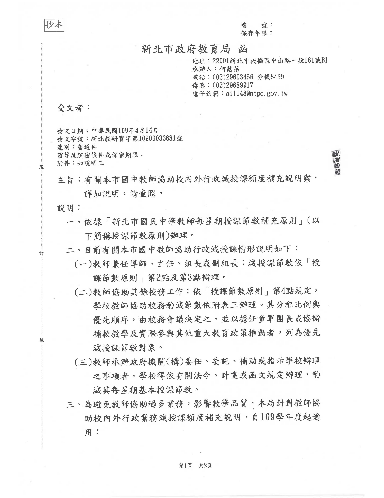
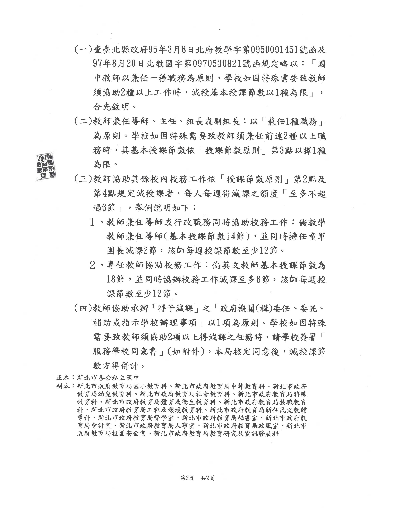
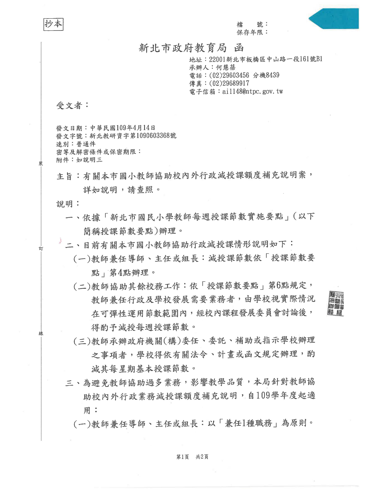
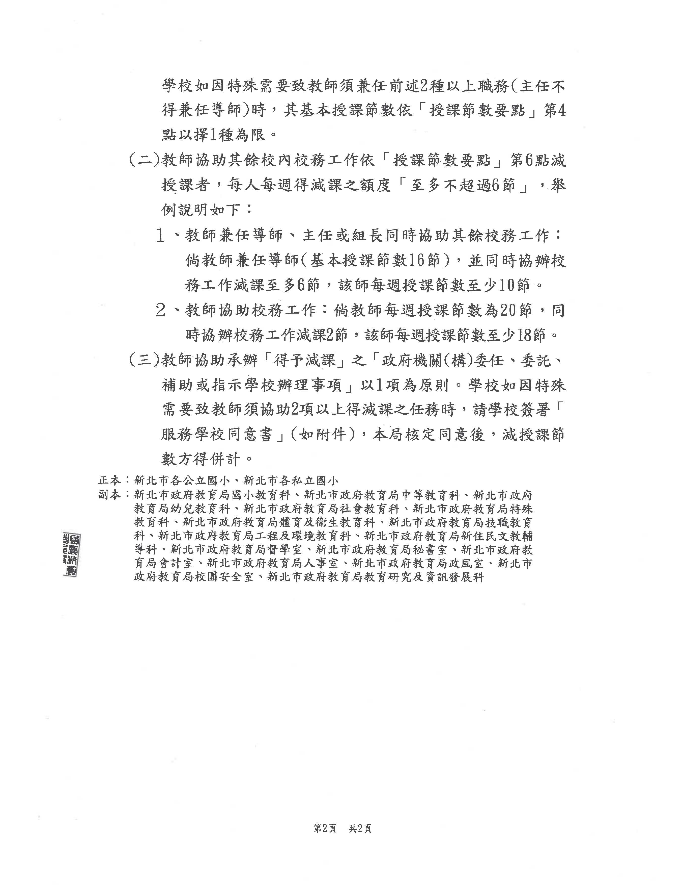

市定法規
新北市立高級中等學校組織規程準則
第 1 條
本準則依高級中等學校組織設置及員額編制標準(以下簡稱本標準)第十一條第一項及新北市政府教育局組織規程第九條規定訂定之。
第 2 條
本準則所稱高級中等學校(以下簡稱學校)，係指新北市立普通型學校、技術型學校及綜合型學校。
第 3 條
學校置校長一人，專任，綜理校務。
學校四十一班以上者，得置副校長一人，襄助校長處理校務，由校長就曾任一級單位主管以上人員聘兼之。
第 4 條
學校應設一級單位，其掌理事項如下：
一、教務處：辦理課程編排、教學實施、教學研究、學籍管理、成績評量、招生、教學設備與教具圖書資料供應及配合實施教育輔導等事項。
二、學生事務處：辦理民主法治教育、道德教育、生活教育、體育衛生保健與團體活動、校園性別事件、防制校園霸凌因應小組及配合實施生活輔導等事項。
三、總務處：辦理文書、檔案管理、公文管理、事務、出納、工友管理、物品採購、營建修繕及財產管理等事項。
四、輔導處(室)：辦理學生生活輔導、心理諮商輔導及生涯輔導等事項。
五、圖書館：辦理圖書購置、分編、典藏、閱覽、利用及推廣教育等事項。
技術型學校應設實習處，辦理學生實習、技能檢定、學生就業輔導、建教合作及其他有關事項。但設有建教合作處者，由該處辦理建教合作事項。
綜合型學校或設有專業群、科、學程之普通型學校，亦得設置實習處或建教合作處，辦理前項事項。
學校得視類型、校務發展需要及規模大小，增設下列一級單位；其設置基準及掌理事項如下：
一、特殊教育處：特殊教育班十八班以上者，得設置；辦理特殊教育及其他有關事項。
二、建教合作處：建教合作班十八班以上者，得設置；辦理建教合作及其他有關事項。
三、進修部：辦理進修教育者，得設置；辦理進修教育及其他有關事項。
四、資訊室：得視業務需要設置；辦理資訊業務及其他有關事項。
五、研究發展處：得視業務需要設置；辦理研究發展及其他有關事項。
六、技術交流處：得視業務需要設置；辦理技術交流及其他有關事項。
學校得依校務發展需要，自行調整各處(室、館、部)之掌理事項。
第 5 條
學校設二級單位(組、科或學程)辦事，並得基於自主管理原則及需要，訂定組別及組數。但不得超過下列基準：
一、普通型及綜合型學校：
（一）二十班以下：十二組。
（二）二十一班以上：十五組。
二、技術型學校：
（一）四十八班以下：十三組。
（二）四十九班以上：十五組。
除前項組數外，有下列情形者，其設置基準如下：
一、附設國民中學部(以下簡稱國中部)，學校班級總數，應包括附設國中部，並得增設四組，不受前項規定之限制。
二、普通型學校附設專業群、科、學程，得另增設二組，不受前項規定之限制。
三、普通型學校設有綜合高中學程十二班以上，得設綜合高中組。
四、設有特殊教育班，得於教務處或輔導處(室)設特教組。
五、技術型學校辦理實用技能學程六班以上，得視實際需要，於適當單位增設實用技能組。
六、設進修部，得視學校規模大小(班級數得併計國民中學附設補習學校班級數)及校務發展需要，增設教務、教學、註冊、學生事務、生活輔導、衛生或實習輔導各組，不受前項規定之限制。但增設組數不得超過下列基準：
（一）五班以下：一組。
（二）六班至九班：二組。
（三）十班至十五班：四組。
（四）十六班以上：五組。
第 6 條
學校置教師、專任輔導教師、導師、秘書、主任、組長、科主任、學程主任及軍訓教官；其員額編制，依本標準第七條、第八條及第十二條規定。
學校兼行政職務人員之進用方式如下：
一、學校未置副校長者，得置秘書一人，由校長就編制內專任教師聘兼之。
二、一級單位主任及二級單位科主任、學程主任，除總務處之主任得由教師兼任或職員專任外，其餘均由校長就專任教師聘兼之。
三、輔導處(室)置主任一人，由校長就專任輔導教師聘兼之。如因業務設組，其組長由校長就具輔導知能之專任教師聘兼之。
四、圖書館置主任一人，由校長遴選具有專業知能之人員專任，必要時得由校長就具有專業知能之專任教師聘兼之。
五、二級單位組長，除總務處之組長由職員專任、學生事務處負責生活輔導業務之組長得由具輔導知能之人員兼任外，其餘由校長就專任教師聘兼之或由職員專任。
第 7 條
學校置幹事、技士、助理員、技佐、電器管理員、管理員、書記等職員；其員額編制，依本標準第八條及第十二條規定。
前項學校職員數，得依學校分布情形或學生人數多寡，視財政狀況及實際業務需要，依新北市政府(以下簡稱本府)年度預算，以不逾學校教職員員額總數百分之二十五編列。但本準則施行前已進用之職員，不受員額總數比率之限制，得繼續任職至離職為止。
學校置醫師、營養師、護理師(或護士)等醫事人員，其員額編制，依本標準第八條及第十二條規定。
學校得依本標準第八條規定，置專任運動教練，並聘(僱)用救生員或運動傷害防護員。
第 8 條
學校設人事室或置人事管理員；其設人事室者，置主任一人，得置組員、助理員或書記若干人，依法辦理人事管理事項；其設置，依人事機構設置有關規定辦理。
第 9 條
學校設會計室或置會計員；其設會計室者，置主任一人，得置組員、佐理員或書記若干人，依法辦理歲計、會計及統計事項；其設置，依主計機構設置有關規定辦理。
第 10 條
學校附設國中部、國民小學部者，其組織及員額編制，依國民教育法相關規定辦理。
第 11 條
學校附設幼兒園者，其組織及員額編制，依幼兒教育及照顧法相關規定辦理。
第 12 條
學校設立分校、分部者，應依高級中等教育法相關規定辦理。
第 13 條
本準則所列各職稱之官等職等或級別及員額，另以編制表定之。
各職稱之官等職等，依職務列等表之規定。
第 14 條
學校職員員額編制表，由學校擬訂，報本府教育局(以下簡稱本局)轉陳本府核定，並送考試院備查。
第 15 條
學校分層負責明細表，由學校訂定，報本局備查。
第 16 條
本準則自中華民國一百十三年二月一日施行。
1. 104年12月30日新北市政府新北府法規字第1042465552號令訂定發布全文15條；並自103年8月1日施行。
2. 中華民國113年2月29日新北市政府新北府法規字第1130267809號令修正發布全文16條；並113年2月1日施行。
2. 中華民國113年2月29日新北市政府新北府法規字第1130267809號令修正發布全文16條；並113年2月1日施行。
教育部法規
高級中等學校組織設置及員額編制標準
第 1 條
本標準依高級中等教育法(以下簡稱本法)第二十四條第一項規定訂定之。
第 2 條
高級中等學校(以下簡稱學校)置校長一人，專任，綜理校務；並得置副校長一人，襄助校長處理校務。
副校長之設置基準，由各該主管機關定之。
第 3 條
學校設下列一級單位：
一、 教務處。
二、 學生事務處。
三、 總務處。
四、 輔導處(室)。
五、 圖書館。
六、 實習處：技術型學校應設置；綜合型學校或設有專業群、科、學程之普通型學校，得設置。
七、 特殊教育處：辦理特殊教育十八班以上者，得設置。
八、 建教合作處：辦理建教合作十八班以上者，得設置。
九、 進修部：辦理進修教育者，得設置。
十、 資訊室、研究發展處、技術交流處或其他處(室)：得視業務需要設置。
第 4 條
學校設人事室或置人事管理員；其設人事室者，置主任一人，得置組員、助理員或書記若干人；其設置，依人事機構設置有關規定辦理。
學校設主(會)計室或置主(會)計員；其設主(會)計室者，置主任一人，得置組員、佐理員或書記若干人；其設置，依主計機構設置有關規定辦理。
第 5 條
學校設下列二級單位：
一、 教務處：
(一) 得設教學、註冊、設備、試務、課務、實習及就業輔導、實驗研究各組辦事。但設有實習處者，不得設實習及就業輔導組。
(二) 普通型學校設有綜合高中學程十二班以上者，得設綜合高中組。
二、 學生事務處：得設訓育、生活輔導、體育、衛生、社團活動各組。
三、 總務處：得設文書、庶務、出納各組。
四、 輔導處(室)：得設輔導、資料各組。
五、 圖書館：得設技術服務、讀者服務、資訊媒體各組。
六、 實習處：得設實習、就業輔導、技能檢定各組；辦理建教合作在十七班以下者，得設建教合作組。
七、 學校辦理實用技能學程六班以上者，得視實際需要於適當單位增設實用技能組。
八、 學校辦理特殊教育班二班以上十七班以下者，得增設特殊教育組。
九、 進修部：得設教務、教學、註冊、學生事務、生活輔導、衛生、實習輔導各組。
十、 資訊室、研究發展處、特殊教育處、建教合作處、技術交流處或其他處(室)：得視業務需要分組。
第 6 條
各該主管機關得視學校規模大小及校務發展需要，並配合學校班級數，訂定第三條及前條單位之設置基準或總量，並納入第十一條所定之組織規程準則。
第 7 條
學校教師員額編制如下：
一、 普通科：每班置教師二人，每達四班，增置教師一人。
二、 專業類科：
(一) 農業、海事水產類：每三班置教師八人；未達三班者，二班置五人，一班置二人。但農業類之農業機械科每班置三人。
(二) 工業及藝術類：每班置教師三人。
(三) 商業及家事類：每二班置教師五人；未達二班者，一班置二人。
(四) 前三目類，除工業類外，設有五科以上者，每增二科得增置教師一人。
(五) 綜合高中學程：每班以二點五人為原則。但辦理工業、農業及海事水產綜合高中課程者，每班置三人。
三、 實用技能學程：日間授課每班置教師一人，每滿四班增一人；夜間授課每班置教師二人。
四、 特殊教育班：依高級中等以下學校特殊教育班班級及專責單位設置與人員進用辦法規定辦理。
五、 體育班：依高級中等以下學校體育班設立辦法規定辦理。
六、 進修部：每班置教師二人，並得由學校現有教師兼任。
七、 專任輔導教師：學校班級數十二班以下者，置一人；十三班至二十四班者，置二人；二十五班以上者以此類推。
八、 導師：每班置一人，由編制內專任教師兼任，但建教合作班得依需要增置導師員額；特殊教育班導師，依高級中等以下學校特殊教育班班級及專責單位設置與人員進用辦法規定設置。
九、 兼行政職務人員：
(一) 學校得置副校長一人，由校長就曾任一級單位主管以上人員聘兼之；未置副校長者，得置秘書一人，由校長就編制內專任教師聘兼之。
(二) 教務處、學生事務處、總務處及實習處各置主任一人，除總務處主任得由教師兼任或職員專任外，其餘均由校長就專任教師聘兼之；其所屬各組，除總務處之組長由職員專任、學生事務處負責生活輔導業務之組長得由具輔導知能之人員兼任外，其餘由校長就專任教師聘兼之或由職員專任。
(三) 輔導處(室)置主任一人，由校長就專任輔導教師聘兼之。如因業務設組，其組長由校長就具輔導知能之專任教師聘兼之。
(四) 圖書館置主任一人，由校長遴選具有專業知能之人員專任，必要時得由校長就具有專業知能之專任教師聘兼之。
(五) 普通型學校、技術型學校及綜合型學校，設有專業類科二科以上者，每一專業科置科主任一人；設有專門學程總班級數四班以上者，置學程主任一人，由校長就各該專業科、學程之專任教師聘兼之。同類專業科及綜合高中專門學程，科主任、學程主任擇一配置。
(六) 資訊室、研究發展處、特殊教育處、建教合作處、技術交流處、進修部或其他一級單位，置主任一人，由校長就專任教師聘兼之。
(七) 進修部組長，得由校長就專任教師聘兼之；進修部軍訓教官得由學校現有軍訓教官兼任。
軍訓主任教官、軍訓教官之員額編制依軍訓教官員額設置之相關規定辦理。本法施行前已依規定進用之護理教師，於本法施行後繼續任職者，其員額編制依護理教師員額設置之相關規定辦理。
第一項第七款有關專任輔導教師之配置規定，自中華民國一百零六年八月一日起逐年完成。
第 8 條
學校職員員額編制如下：
一、 總務處所屬各組，各置組長一人。
二、 幹事、助理員、管理員、書記，依下列基準設置：
(一) 幹事：六班以下者，置二人，超過六班部分，每六班增置一人，超過六班之班級數除以六之餘數三班以上者，增置一人。設有學生宿舍者，寄宿學生數八十人以上置幹事一人；三百人以上，增置一人；三百人以上，每增寄宿學生二百人，再增置一人。
(二) 助理員、管理員：得置二人或三人。
(三) 書記：置一人，四十一班以上者，得增置一人。
三、 技士、技佐：
(一) 工業及海事水產專業科，每科置技士及技佐各一人；農業專業科置技士一人，及設有農機具工廠之專業科，每科置技佐一人，商業及家事每類置技士一人。裝有高壓電力六百伏特以上學校，增置技士一人，專責電力管理。
(二) 辦理綜合高中專門學程，每校置技士、技佐二人，四十一班以上者，得增置一人。設有工業、農業、海事類學程，每學程在四班以下者，得置技士一人，逾四班者，每增四班得增置技佐一人。辦理商業、家事類學程者，每類得就技士、技佐擇一配置一人。
(三) 設置同類專業科及綜合高中專門學程，其技士、技佐員額於前二目擇一配置。
四、 電器管理員：學校有電器設備之維護管理需要，得置電器管理員一人。
五、 醫師：得置兼任醫師一人，四十一班以上得增置一人，並得在預算額度內分科遴請合格醫師應診之。
六、 營養師、護理師(或護士)：依學校衛生法規定辦理。進修部應於學校衛生法所定員額外，單獨置護理人員一人。
七、 進修部兼任幹事：九班以下至多三人；十班至十五班至多五人；十六班以上至多八人。由校長指派現有人員兼任。
八、 進修部兼辦人員：就業實習、總務、人事及主計等業務，由校長指派相關人員兼辦之。
公立學校依第四條、第七條第二項第二款及前項第一款至第四款職員之員額配置，應符合各機關職稱及官等職等員額配置準則規定；學校之總量及配置基準，應納入第十一條所定之組織規程準則或組織規程。
學校依高級中等以下學校體育班設立辦法得置專任運動教練。
學校設有游泳池或因學生運動與訓練需要，經報主管機關核准後得聘(僱)用救生員或運動傷害防護員若干人。
第 9 條
私立學校除依本標準規定設單位外，得視實際需要，設其他單位。
私立學校人事及會計員額設置，依私立學校法及相關規定辦理；學校財團法人董事會得置辦事人員若干人，並得納入所設私立學校員額編制。
第 10 條
本法第六十條第一項第二款所稱合格教師，指於公立或已立案之私立學校編制內，按月支給待遇，並依法取得與其任教類別、學科相符教師證書之專任或代理教師，並包括經中央主管機關審核通過，取得專業及技術教師證書之專任專業及技術教師。
學校前項合格教師比率(學校合格教師總人數╱學校聘任之專任及代理教師總人數)，應達下列基準：
一、 公立學校：偏鄉學校百分之八十以上，其餘學校百分之八十五以上。
二、 私立學校：偏鄉學校或師資培育供需現況不足之群科百分之七十以上，其餘學校或群科百分之八十以上。
前項所定偏鄉學校，應符合下列條件之一，並由各該主管機關認定：
一、 學校所在地區，無公共交通工具到達者。
二、 學校距公共交通站牌，達五公里以上者。
三、 社區距學校五公里以上，且無公共交通工具可到達學校者。
四、 公共交通工具到學校所在地區，每日少於四班，或公共交通工具每日八班以內仍無法配合上下學者。
第二項第二款所定師資培育供需現況不足之群科，由各該主管機關認定。
第 11 條
各該主管機關應就所屬公立學校依本標準規定，訂定組織規程準則；各學校應擬訂員額編制表，報各該主管機關核定。各該主管機關應將組織規程準則及各學校職員員額編制表，分別轉請考試院核備或備查。
私立學校應依本標準規定，擬訂組織規程及員額編制表，報各該主管機關核定。
第 12 條
學校附設國民中學、國民小學部者，其組織及員額編制，依國民教育法相關規定辦理。
第 13 條
本標準自中華民國一百零三年八月一日施行。
本標準中華民國一百零七年七月十六日修正發布之條文，自發布日施行。
1. 103年1月10日教育部臺教授國部字第 1020136307A號令訂定發布全文13條。
2. 104年8月26日修正第4、8條條文。
3. 107年7月16日修正第7、13條條文。
2. 104年8月26日修正第4、8條條文。
3. 107年7月16日修正第7、13條條文。
市定標準
新北市立高級中等學校教師每週教學節數標準
第 1 條
本標準依高級中等教育法第三十二條規定訂定之。
第 2 條
本標準適用於新北市立高級中等學校(以下簡稱學校)。
本標準之主管機關為新北市政府教育局(以下簡稱本局)。
第 3 條
學校專任教師及兼任導師之專任教師(以下簡稱兼任導師)，每週基本教學節數(以下簡稱基本節數)如附表一規定，其核計方式如下：
一、 擔任基本節數相同之二種以上課程(領域、科目)者，按各該課程(領域、科目)教學節數合併計算。
二、 擔任基本節數不同之二種以上課程(領域、科目)者，按各該課程(領域、科目)教學節數之比例折算。
三、 兼任導師擔任團體活動課程之班級活動教學節數，應併入其基本節數計算。但擔任其餘團體活動時間，不計入基本節數。
第 4 條
學校應依十二年國民基本教育課程綱要總綱規定，訂定課程計畫，並報本局備查。
前項課程計畫所定跨領域或跨科目之課程採協同教學方式者，其教師教學節數之核計方式如下：
一、 全學期全部節數均採協同教學：教學節數一節，採計為每週教學節數一節。
二、 全學期部分節數採協同教學：不計入每週教學節數。但依實際教學節數，支給鐘點費。
第 5 條
學校教師依課程計畫所定彈性學習時間，擔任充實、增廣或補強性教學課程授課者，其教學節數比照前條第二項規定計算之。
學校教師依課程計畫所定彈性學習時間，擔任學生自主學習教學(指導)，或選手培訓、學校特色活動指導者，依實際教學(指導)節數，支給鐘點費。
第 6 條
學校兼任行政職務之專任教師(以下簡稱兼任行政教師)，基本節數如附表二規定，其核計方式如下：
一、 班數以日間部學校(含分散式資源班、巡迴輔導班)、國中編制班級數合計為計算標準。但輪調式建教合作班，每二班折算為一班。
二、 學校輔導處(室)主任及專任輔導教師，專職學生輔導工作。但其因學校課務需要擔任教學者，其基本節數比照處(室)主任及教學組長之規定。
三、 進修部主任、組長及分部主任，其基本節數比照附表二所列節數各減少二節；其班數依進修部或分部編制班級數計算之。
四、 進修部專任輔導教師擔任課程教學者，其基本節數比照進修部教學組長之規定。
五、 學校辦理綜合高中所增兼任行政教師(含學程主任及輔導、課務、課外活動、招生等組長)，經報本局同意後，其基本節數比照同級兼任行政教師之規定。
特殊教育班教師因兼任行政職務所減少之教學節數，學校應以代理教師或兼任方式補足之，不得減少該特殊教育班每週教學節數。
第 7 條
學校教師協助校務，其減授教學節數(以下簡稱減授節數)之核計方式如下：
一、 課程領域(包含語文、數學、社會、自然科學及藝能五大領域)之召集人，其基本節數減授二節；藝能領域包含藝術、綜合活動、科技、健康與體育、全民國防教育等領域。
二、 學校各年級級導師，其基本節數減授一節。
三、 學校辦理綜合高中未設學程主任者，得設學程召集人，其減授節數比照第一款規定。
四、 教師協助校務每週減授節數如附表三規定，其分配比例與優先順序，由校務會議決定；並以擔任童軍團長、協辦學習扶助或實際參與其他重大教育政策推動者，列為減授節數優先對象。
五、 教師兼任課程諮詢教師或其召集人，或承辦政府機關(構)委任、委託、補助或指示學校辦理之事項者，得依有關法令規定，減授其基本節數；其減授節數，不計入附表三協助校務每週減授節數。
第 8 條
學校教師超時教學鐘點費(以下簡稱超時鐘點費)之核發方式如下：
一、 教師實際教學節數超過應教學節數者(以下簡稱超時教學節數)，核實支給超時鐘點費；超時教學節數應於開學前註記於課表，並平均分散於每日為原則。
二、 全學期兼(代)課者，按學校行事曆排定之每週(代)課節數，核實支給超時鐘點費；其節數包括適逢國定假日為實際兼(代)課及學期始(末)未滿一週之教學節數。但擔任畢業班之教師，於學校停課後之節數，不予計入。
三、 教師超時教學節數與全學期代課節數合計以九節為限，以上節數
四、 日間部及進修部合併以十二節為限；學期中之短期代課節數，則不予計入。但課程有不可分割或特殊情形，報本局核准者，不在此限。
五、 設有體育班之學校，其寒(暑)假應開設競技專項運動綜合訓練者，寒假以三學分、暑假以六學分為限，得依實際教學節數核實支給超時鐘點費。
六、 學校依規定排課核算後，如確有超時教學節數，得於學校人事費項下核實支給超時鐘點費。
前項第一款應教學節數，以基本節數扣減協助校務每週減授節數核計之。
第 9 條
全民國防教育課程由軍訓教官(包括軍訓主任教官、軍訓教官兼任生活輔導組長及一般軍訓教官)擔任教學者，該課程每週教學節數，由一般軍訓教官平均分配。
全民國防教育課程依前項規定分配後，一般軍訓教官每人基本節數達十節，仍有賸餘節數時，由軍訓教官兼任生活輔導組長或軍訓主任教官優先擔任；再有賸餘節數時，由全部軍訓教官分別擔任。
軍訓主任教官基本節數，比照附表二處主任之規定。
第 10 條
學校應按教師登記、檢定科目並參酌其專長，排定教學課程。但就實習課程、選修課程及稀有科目如不易延聘合格師資，得聘請具有專長者兼課，除法令另有規定外，節數以每週不超過九節為限。
第 11 條
依高級中等學校合聘教師辦法聘任之合聘教師，其基本節數，按該教師於各合聘學校教學之課程種類及擔任之職稱類別，依本標準相關規定辦理。
依高級中等學校專業及技術教師遴聘辦法聘任之編制內專任教師，其基本節數，按該教師於學校教學之課程種類及擔任之職稱類別，依本標準相關規定辦理。
第 12 條
學校教師每週教學節數未依本標準辦理者，除追繳其溢領鐘點費外，並議處失職人員。
第 13 條
學校附設國中部之專任教師及兼任導師，其教學節數應依新北市國民中學教師基本節數相關規定辦理。但兼任行政教師，其基本節數及協助校務減授節數，得準用本標準規定辦理。
第 14 條
學校代理教師每週教學節數，準用本標準之規定。
第 15 條
本標準自發布日施行。
本標準中華民國一百零八年十月三十日修正條文，自中華民國一百零八年八月一日施行。
本標準中華民國一百十二年二月十五日修正條文，自中華民國一百十一年八月一日施行。
本標準中華民國一百十二年七月十九日修正條文，自中華民國一百十二年八月一日施行。
本標準自中華民國○年○月○日修正條文，自中華民國一百十五年八月一日施行。
附表一：新北市立高級中等學校教師每週教學節數標準
|
節 數
職別
課程 (領域、科目)
|
專任教師 | 導 師 | |
|---|---|---|---|
| 語文領域 | 國文 (國語文) | 十四 | 九 |
| 英文 (英語文) | 十六 | 十一 | |
| 數學 | 十六 | 十一 | |
| 社會領域 | 十六 | 十一 | |
| 自然 (自然科學) 領域 | 十六 | 十一 | |
| 藝術領域 | 十六 | 十一 | |
| 生活 (綜合活動) 領域 | 十六 | 十一 | |
| 生活領域之計算機概論或資訊科技概論 (科技領域) | 十六 | 十一 | |
| 健康與體育領域 | 十六 | 十一 | |
| 全民國防教育 | 十六 | 十一 | |
| 各群、科、學程之專業科目及實習科目，包括專題製作 (專題實作) | 十六 | 十一 | |
| 選修課程，包括生命教育類、生涯規劃類、其他類 | 十六 | 十一 | |
備註：
|
|||
附表二：新北市立高級中等學校教師兼任行政職務每週基本教學節數表
|
節數
班數
職別
|
九班 以下 |
十班 至 十八班 |
十九班 至 二十四班 |
二十五班 至 三十班 |
三十一班 至 四十班 |
四十一班 至 五十班 |
五十一班 至 六十班 |
六十一班 以上 |
|---|---|---|---|---|---|---|---|---|
| 副校長、秘書、處(室)主任、圖書館主任 | 七 | 五 | 三 | 一 | 一 | ○ | ○ | ○ |
| 教學、註冊、訓育、生活輔導、衛生組長 | 八 | 八 | 六 | 五 | 三 | 一 | ○ | ○ |
| 上列各組以外之編制內各處(室)組長 | 九 | 九 | 七 | 七 | 五 | 三 | 一 | ○ |
| 各群、科、學程主任 | 全科總班數三班(含)以下者八節；四班至六班者七節；七班以上者六節。 | |||||||
附表三：新北市立高級中等學校教師協助校務酌減節數表
| 總班級數 | 二十六班以下 | 二十七班至四十四班 | 四十五班至六十二班 | 六十三班以上 |
|---|---|---|---|---|
|
協助校務 酌減節數 |
八節至十二節 | 十二節至十八節 | 十八節至三十節 | 三十節至六十節 |
115年8月11日新北市政府教育局新北府教中字第 1151487041號函預告修正第15條及第3條附表一；並自115年8月1日施行。
教育部要點
教育部國民及學前教育署補助高級中等學校實施十二年國民基本教育課程及國立高級中等學校教師每週教學節數標準新增鐘點費要點
一、教育部國民及學前教育署(以下簡稱本署)為補助高級中等學校(以下簡稱學校)，執行十二年國民基本教育課程綱要(以下簡稱課綱)高級中等教育階段相關規定、高級中等學校課程規劃及實施要點、高級中等學校實習課程實施辦法、高級中等學校課程諮詢教師設置相關規定及國立高級中等學校教師每週教學節數標準(以下簡稱節數標準)，所新增之鐘點費，特訂定本要點。
二、本要點所稱新增鐘點費，指學校適用課綱之班級實施課程教學增加教師授課、指導，及減授課程諮詢教師、課程諮詢教師召集人(以下簡稱召集人)每週基本教學節數(以下簡稱基本節數)或依節數標準所定教師基本節數調降、協辦行政教師減授基本節數，所增加之鐘點費。前項新增鐘點費，依公立中小學兼任及代課教師鐘點費支給基準表規定支給。但授課或指導教師為大專校院教師者，依公立大專校院兼任教師鐘點費支給基準表規定，支給其鐘點費。
三、本要點補助項目及基準如下：
（一）部定必修課程新增鐘點費：
1.各類型學校國語文、英語文及數學三科目：採班群實施適性分組教學增加教師授課之鐘點費；其補助之金額，以該科目原應支出鐘點費之零點五倍為限。
2.普通型學校自然科學探究與實作課程：實施跨科目協同教學增加不同科目教師授課之鐘點費；其補助之金額，以該課程原應支出鐘點費之一倍為限。
3.技術型學校之社會、自然科學與藝術領域：實施各該領域跨科之統整型、探究型或實作型課程，增加不同科目教師授課之鐘點費；其補助之金額，以該課程原應支出鐘點費之一倍為限。
4.學校設有專業群、科之實習科目：實施分組教學增加教師授課之鐘點費；其補助之金額，以該課程原應支出鐘點費之一倍為限。
（二）校訂必修課程及選修課程新增鐘點費：
下列各目補助之總金額，以學校適用課綱之班級所開設校訂必修課程及選修課程之總節數原應支出鐘點費之一倍為限：
1.普通型學校、綜合型學校及單科型學校採班群開課增加教師授課之鐘點費；其補助之金額，以該班群原應支出鐘點費之零點五倍為限。
2.技術型學校及綜合型學校開設學生應修習學分數一點二倍至一點五倍之選修課程增加教師授課之鐘點費；其補助之金額，以學生應修習學分數之課程原應支出鐘點費之零點五倍為限。
3.技術型學校、綜合型學校開設專題實作課程及綜合型學校專門學程之實習科目實施分組教學增加教師授課之鐘點費；其補助之金額，以該課程原應支出鐘點費之一倍為限。
4.學校於一般科目開設跨領域或跨科目專題類與統整課程增加不同領域或科目教師授課之鐘點費；其補助之金額，以該課程原應支出鐘點費之一倍為限。
（三）彈性學習時間新增鐘點費：規劃學生自主學習、選手培訓、充實(增廣)教學、補強性教學及學校特色活動增加教師授課或指導之鐘點費；其補助之金額，以學校適用課綱之班級所規劃之彈性學習時間節數原應支出鐘點費之零點五倍為限。
（四）設置課程諮詢教師、召集人新增鐘點費：依高級中等學校課程諮詢教師設置要點所定課程諮詢教師、召集人減授基本節數而增加之鐘點費。
（五）教師基本節數調降新增鐘點費：國立學校依節數標準第二條及第五條所定教師及兼任行政職務之專任教師基本節數調降而增加之鐘點費。
（六）協辦行政教師減授基本節數新增鐘點費：國立學校依節數標準第八條所定協辦行政教師減授基本節數而增加之鐘點費。
私立學校以補助前項第二款選修課程及第四款之新增鐘點費為限。學校因特殊情形，經報各該主管機關核准者，得不受第一項第一款至第四款所定補助基準之限制。
四、依本要點之申請、審查、請款及補助比率如下：
（一）申請：學校申請前點第一項第一款至第四款者，應依本署規定，檢具新增鐘點費需求表，直轄市、縣(市)政府(以下簡稱地方政府)主管之學校，報各該地方政府彙整列冊，向本署申請補助，教育部主管之學校，逕向本署申請補助。國立學校申請前點第一項第五款及第六款者，應依本署規定，檢具新增鐘點費需求表，逕向本署申請補助。
（二）審查：本署得邀集學者專家審查前款申請。審查通過者，由本署視年度預算核定補助金額，未通過者，不予補助。地方政府主管之學校，由本署通知地方政府轉知審查結果；教育部主管之學校，由本署逕行通知審查結果。
（三）請款：地方政府主管之學校，由地方政府彙整列冊並檢附領據向本署請款；教育部主管之學校，國立學校由本署撥入校務基金，私立學校逕向本署請款。
（四）補助比率：
1.教育部主管之國立學校，依第二款審查核定之金額，最高全額補助。
2.地方政府主管之學校，依中央對直轄市及縣(市)政府補助辦法之規定，就地方政府財力級次，針對第二款審查核定之金額給予不同補助比率；屬第一級者，最高補助百分之八十，第二級者，最高補助百分之八十二，第三級者，最高補助百分之八十四，第四級者，最高補助百分之八十六，第五級者，最高補助百分之九十。
五、本署及地方政府得不定期訪視學校執行績效；必要時，得聘請專家學者專案查核，作為下次補助之參考。
六、依本要點申請補助、核撥及結報，應依教育部補(捐)助及委辦經費核撥結報作業要點之規定辦理。
【法規沿革】
1. 中華民國107年7月10日教育部臺教國署高字第 1070078239B號令訂定發布全文6條，並自108年8月1日生效。
2. 中華民國108年05月30日教育部臺教國署高字第 1080053255B 號令修正發布第4點，並自108年8月1日生效。
3. 中華民國109年4月15日教育部臺教國署高字第 1090037484B號令修正發布第4點、第6點，並自109年2月1日生效。
4. 中華民國110年3月30日教育部臺教國署高字第 1100027922B號令修正發布第2點、第3點，並自即日生效。
5. 中華民國114年10月15日教育部國民及學前教育署臺教國署高字第1145405518A號令修正第4點，並自中華民國115年1月1日生效。
2. 中華民國108年05月30日教育部臺教國署高字第 1080053255B 號令修正發布第4點，並自108年8月1日生效。
3. 中華民國109年4月15日教育部臺教國署高字第 1090037484B號令修正發布第4點、第6點，並自109年2月1日生效。
4. 中華民國110年3月30日教育部臺教國署高字第 1100027922B號令修正發布第2點、第3點，並自即日生效。
5. 中華民國114年10月15日教育部國民及學前教育署臺教國署高字第1145405518A號令修正第4點，並自中華民國115年1月1日生效。
教育部準則
國民小學與國民中學班級編制及教職員員額編制準則
第 1 條
本準則依國民教育法第二十三條第一項規定訂定之。
第 2 條
國民小學及國民中學普通班班級編制規定如下：
一、國民小學每班學生人數以二十九人為原則。
二、國民中學每班學生人數以三十人為原則。
三、山地、偏遠及離島等地區之學校每班學生人數，得視實際情形予以降低，並以維持年級教學為原則。
其他班級類型之班級編制，依各該法規規定辦理。
第 3 條
國民小學教職員員額編制如下：
一、校長：每校置校長一人，專任。
二、主任：各處、室、分校及其他一級單位置主任一人，除輔導專責單位主任得由教師專任外，其餘由教師兼任。
三、組長、副組長：
（一）各組及其他二級單位，置組長一人，優先由職員專任或兼任，或由教師兼任。
（二）學校三十七班以上者，置副組長若干人，由教師兼任；其配置基準及人數，由直轄市、縣（市）主管機關定之。
四、教師：每班至少置教師一．六五人；全校未達九班者，另增置教師一人。
五、專任輔導教師：班級數二十班以下者，置一人；二十一班至四十班者，置二人；四十一班以上者，以此類推。
六、幹事、助理員、管理員及書記(包括各處室職員及圖書館、教具室、實驗室管理員等，不包括人事、主計專任人員)：七十二班以下者，置一人至三人；七十三班以上者，置三人至五人。
七、圖書館專業人員：至少應置一人，且專業人員占圖書館工作人員之比率應達三分之一；其專業人員，得由符合圖書館設立及營運標準規定之教師或職員專任或兼任。
八、營養師及護理師或護士：依學校衛生法規定辦理。其具有護理師資格者，以護理師任用；具有護士資格者，以護士任用。
九、住宿生輔導員：山地及偏遠地區學校，學生宿舍有十二人以上住宿生者，得置住宿生輔導員一人；五十人以上住宿生者，得置住宿生輔導員二人。但學生宿舍有十一人以下住宿生者，必要時，得置住宿生輔導員一人或指派專人兼任。
十、運動教練：得依國民體育法規定置專任運動教練若干人。
十一、人事及主計人員：依有關法令之規定辦理。
國民小學得視需要，在不超過全校教師員額編制數百分之八範圍內，將專任員額控留，改聘代理教師、兼任、代課教師、教學支援工作人員或輔助教學工作之臨時人員，但學校教師員額編制十二人以下者，得將專任員額控留一人改聘之；其控留員額為二人以上者，至少半數員額應改聘代理教師。
前項學校所控留之專任員額經費，應全數用於改聘之人員。
辦理實驗之學校，得視需要增置教師；其增置基準，由該管主管機關視實驗性質定之。
第一項第五款有關專任輔導教師之配置規定，學校應自中華民國一百零六年八月一日起，於十六年內逐年完成。完成前，由符合學生輔導法施行細則第二條第二款規定之教師兼任。
國民小學專任及兼任輔導教師逐年配置基準表，規定如附件一。
第 4 條
國民中學教職員員額編制如下：
一、校長：每校置校長一人，專任。
二、主任：各處、室、分校及其他一級單位置主任一人，除輔導專責單位主任得由教師專任外，其餘由教師兼任。
三、組長、副組長：
（一）各組及其他二級單位，置組長一人，優先由職員專任或兼任，或由教師兼任。
（二）學校二十五班以上者，置副組長若干人，由教師兼任；其配置基準及人數，由直轄市、縣(市)主管機關定之。
四、教師：每班至少置教師二．二人，每九班得增置教師一人；全校未達九班者，得另增置教師一人。
五、專任輔導教師：班級數十二班以下者，置一人；十三班至二十四班者，置二人；二十五班以上者，以此類推。
六、幹事、助理員、管理員及書記(包括各處室職員及圖書館、教具室、實驗室、家政教室管理員等，不包括人事、主計專任人員)：三十六班以下者，置二人至九人；三十七班至七十二班者，置三人至十三人；七十三班以上者，置五人至二十人。
七、圖書館專業人員：至少應置一人，且專業人員占圖書館工作人員之比率應達三分之一；其專業人員，得由符合圖書館設立及營運標準規定之教師或職員專任或兼任。
八、營養師及護理師或護士：依學校衛生法規定辦理。其具有護理師資格者，以護理師任用；具有護士資格者，以護士任用。
九、住宿生輔導員：山地及偏遠地區學校，學生宿舍有十二人以上住宿生者，得置住宿生輔導員一人；五十人以上住宿生者，得置住宿生輔導員二人。
十、運動教練：得依國民體育法規定置專任運動教練若干人。
十一、人事及主計人員：依有關法令之規定辦理。
前條第二項至第四項規定，於國民中學準用之。
第一項第五款有關專任輔導教師之配置規定，學校應自中華民國一百零六年八月一日起，於十二年內逐年完成。完成前，由符合學生輔導法施行細則第三條第二款規定之教師兼任。
國民中學專任及兼任輔導教師逐年配置基準表，規定如附件二。
第 5 條
國民小學及國民中學之全校教師員額編制，得經各該主管機關核定，按教師授課節數滿足學生學習節數定之，不受第三條第一項第四款及前條第一項第四款規定之限制；其計算公式如下：
學校全校教師員額 ＝ (全校學生每週學習總節數 ＋ 全校教師每週兼任各項職務總減授節數) ÷ 各該主管機關規定專任教師每人每週授課節數
第 6 條
偏遠地區國民小學及國民中學全校學生人數達三十一人以上者，其全校教師員額編制，應依偏遠地區學校教育發展條例第十一條第一項規定，按教師授課節數滿足學生學習節數定之，不受第三條第一項第四款及第四條第一項第四款規定之限制；其計算公式如下：
學校全校教師員額 ＝ (全校學生每週學習總節數 ＋ 全校教師每週兼任各項職務總減授節數) ÷ 各該主管機關規定專任教師每人每週授課節數
第 7 條
直轄市、縣(市)主管機關得就教職員員額編制，另定優於本準則之規定。
直轄市、縣(市)主管機關得依學校分布情形或學生人數多寡，視財政狀況及實際業務需要，於不違反相關法律規定下，就職員員額編制另定有關規定，並報中央主管機關備查，不受第三條及第四條規定之限制。
第 7-1 條
國民小學或國民中學，已依第三條第一項第六款或第四條第一項第六款規定配置職員後，基於人力資源需求，報經直轄市、縣（市）主管機關同意後，得依勞動基準法相關規定，以契約進用人員。
國民小學或國民中學，經直轄市、縣（市）主管機關指定統籌辦理所轄全部或部分學校之部分業務者，直轄市、縣（市）主管機關應依其指定辦理事項之規模，另增置教師員額，或依勞動基準法相關規定，以契約進用人員。
第 8 條
本準則自發布日施行。
1. 96年3月21日教育部台參字第0960036864C號令修正發布全文6條。
2. 97年7月4日教育部台參字第0970119596C號令修正發布。
3. 98年10月30日教育部台參字第0980165847C號令修正發布。
4. 100年7月6日教育部臺參字第1000108754C號令修正第3、4、6條101年8月1日施行。
5. 101年10日5日教育部臺參字第1010176706C號令修正發布第3條。
6. 103年3月14日教育部臺教授國部字第 1030013420B號令修正發布第3條條文。
7. 105年8月12日教育部臺教授國部字1050076087B號令修正發布。
8. 106年8月3日教育部臺教授國部字第1060075321B號修正。
9. 中華民國107年7月6日教育部臺教授國部字第 1070076914B號令修正第4條、第4條之一；並自發布日起施行。
10. 中華民國112年12月18日教育部臺教授國部字第 1120174459A號令修正發布全文8條；並自發布日施行。
11. 中華民國115年7月15日教育部臺教授國部字第1155501981A號令修正第3條、第4條、第7條之1；並自發布日施行。
2. 97年7月4日教育部台參字第0970119596C號令修正發布。
3. 98年10月30日教育部台參字第0980165847C號令修正發布。
4. 100年7月6日教育部臺參字第1000108754C號令修正第3、4、6條101年8月1日施行。
5. 101年10日5日教育部臺參字第1010176706C號令修正發布第3條。
6. 103年3月14日教育部臺教授國部字第 1030013420B號令修正發布第3條條文。
7. 105年8月12日教育部臺教授國部字1050076087B號令修正發布。
8. 106年8月3日教育部臺教授國部字第1060075321B號修正。
9. 中華民國107年7月6日教育部臺教授國部字第 1070076914B號令修正第4條、第4條之一；並自發布日起施行。
10. 中華民國112年12月18日教育部臺教授國部字第 1120174459A號令修正發布全文8條；並自發布日施行。
11. 中華民國115年7月15日教育部臺教授國部字第1155501981A號令修正第3條、第4條、第7條之1；並自發布日施行。
教育部基準
國民中小學教師授課節數訂定基準
一、教育部(以下簡稱本部)為使各領域專任教師之授課節數一致，並達總量管制之要求，特訂定本基準。
二、國民中小學專任教師之授課節數，依授課領域、科目及學校需求，每週安排十六節至二十節為原則，且不得超過二十節之上限。專任教師授課節數應以固定節數為原則，不宜因學校規模大小而不同。
三、專任教師兼任導師者，其授課節數與專任教師之差距以四節至六節為原則。
四、專任教師兼任行政職務，其減授節數之基準由各該主管教育行政機關訂定之。國立師資培育大學附設實驗國民小學專任教師兼任主任行政職務者，每週之授課節數以一節至四節為原則；兼任組長行政職務者，每週之授課節數以七節至十三節為原則。
專任教師每週兼課、超時授課及代課節數，除法令另有規定外，依下列原則辦理：
(一) 兼課（超時授課）復代課節數不包括進修部者，併計以不超過九節為原則。
(二) 兼課（超時授課）復代課節數包括進修部者，併計以不超過十二節為原則。
前項規定，如課程不可分割或特殊情形報經各該主管教育行政機關核准者，不在此限。
五、輔導教師負責執行發展性及介入性輔導措施，並協助處遇性輔導措施，以學生輔導工作為主要職責；其授課時數，規定如下：
(一) 專任輔導教師不得排課。但因課務需要教授輔導相關課程者，以不超過教師兼主任之授課節數排課。
(二) 兼任輔導教師之減授節數，國民中學教師以十節為原則，國民小學教師以二節至四節為原則。
六、國民中小學之人事、會計人員，不論規模大小，不得由教師兼任，其人員之任用，應依國民教育法之規定辦理。
七、各該主管教育行政機關應訂定不同規模國民中小學之行政組織層級、單位及人員配置，發揮總量管制效益，合理調配專任、兼任及部分時間支援教學之人力，以維教學品質。
八、中央政府專案補助增置之員額，應優先運用於教師人力缺乏之學校
九、各該主管教育行政機關，應依本基準規定及人力、經費等實際狀況，訂定補充規定。
【法規沿革】
1. 98年8月6日教育部台國(四)字第0980126062B號令。
2. 101年1月20日教育部臺國(四)字第1000234382C號令。
3. 105年4月8日臺教授國部字第1050030051B號令。
4. 114年7月28日教育部臺教授國部字第1145502829A號令修正第四點，並自中華民國114年8月1日生效。
2. 101年1月20日教育部臺國(四)字第1000234382C號令。
3. 105年4月8日臺教授國部字第1050030051B號令。
4. 114年7月28日教育部臺教授國部字第1145502829A號令修正第四點，並自中華民國114年8月1日生效。
市定規程
新北市立國民中學及國民中小學組織規程
第 1 條
本規程依新北市政府教育局組織規程第九條規定訂定之。
新北市立國民中學及新北市立國民中小學(以下簡稱各校)之組織，依本規程之規定。
第 2 條
各校之校名，應冠以新北市立之名稱。
第 3 條
各校置校長一人，承新北市政府教育局(以下簡稱本局)局長之命，綜理校務。
第 4 條
各校設教務處、學生事務處、總務處及輔導室，分別掌理下列事項：
一、 教務處：課程發展、課程編排、教學實施、學籍管理、成績評量、教學設備、資訊與網路設備、教具圖書資料供應、教學研究與教學評鑑及與輔導單位配合實施教育輔導等事項。
二、 學生事務處：公民教育、民主法治教育、道德教育、生活教育、體育衛生保健、學生團體活動與生活管理及與輔導單位配合實施生活輔導等事項。
三、 總務處：學校文書、事務及出納等事項。
四、 輔導室：學生資料蒐集與分析、學生智力、性向與人格測驗、學生學習興趣、成就與志願輔導諮商、特殊教育及親職教育等事項。
六班以下者，設教導處，掌理前項教務處及學生事務處業務。
國民中小學之國民小學部(以下簡稱國小部)十三班以上者，增設教導處。
各校得設進修部辦理國民補習教育及其他有關事項。
第 5 條
各校得視學校規模大小及校務發展需要，於處、室及部分設教務組、教學組、設備組、教學設備組、註冊組、資訊組、訓育組、生活教育組、體育組、衛生組、體育衛生組、事務組、出納組、文書組、輔導組、學輔組、適性生涯組、特教組、技藝教育組及學習照顧組及教導組。
第 6 條
各校基於學校自主管理，得依下列基準設各處、室及分設各組辦事：
一、 六班以下：設教導處、總務處、輔導室。下設五組。
二、 七班至十二班：設教務處、學生事務處、總務處、輔導室。國民中學下設九組，國民中小學下設十組。
三、 十三班以上：設教務處、學生事務處、總務處、輔導室。下設十三組。
前項班級數，於國民中小學，係指其國民中學部及國小部合計之總班級數；依第四條第三項增設之教導處，下設二組。
除第一項組數外，有下列情形者，其設置基準如下：
一、各校設技藝教育班者，得視需要於適當處、室設技藝教育組。
二、設特殊教育班者，得增設特教組，不受第一項組數之限制。
三、設進修部，二班以下不設組、三班至五班設教導組、六班以上設教務組及訓育組，不受第一項組數之限制。
第 7 條
第四條至前條所訂各處、室、部及組別之名稱，各校因實際發展需要，得報本局核准後調整之。
第 8 條
各校教職員得置之各類職稱，依國民小學與國民中學班級編制及教職員員額編制準則之規定。
第 9 條
各校設會計室者，置主任、佐理員、書記，依法辦理歲計、會計及統計事項；未設會計室者，置會計員，專任或由新北市政府(以下簡稱本府)主計處派員兼任，置專任會計員者，得置書記；未置會計員者，由本府主計處派員兼辦。
第 10 條
各校設人事室者，置主任、助理員、書記，依法辦理人事管理事項；未設人事室者，置人事管理員，專任或由本府人事處派員兼任，置專任人事管理員者，得置書記；未置人事管理員者，由本府人事處派員兼辦。
第 11 條
各校得附設幼兒園，辦理幼兒教育業務，其編制依幼兒教育及照顧法相關規定辦理。
第 12 條
各校因實際需要，得報經本局轉陳本府核准後，設分校或分班。
第 13 條
各校教職員員額編制基準，由本局另定之；設特殊教育班者，並依高級中等以下學校及幼兒園特殊教育班班級與專責單位設置及人員進用辦法相關規定辦理。
第 14 條
各校設校務會議，議決校務重大事項，由校長召集，並為主席。
校務會議由校長、全體專任教師或教師代表、家長會代表及職工代表組成之，其成員比例由本府定之。
第 15 條
各校職員員額編制表，由各校擬訂，報請本局轉陳本府核定，並送考試院備查。
本規程所列各職稱之官等職等或級別及員額，另以編制表定之。
各職稱之官等職等，依職務列等表之規定。
第 16 條
各校分層負責明細表，由本局定之。
第 17 條
本規程自中華民國一百十四年八月一日施行。
【法規沿革】
1. 99年12月25日北府法規字第0991227588號令[cite: 18]。
2. 102年5月8日北府法規字第 1021710699號令[cite: 18]。
3. 114年10月29日新北市政府新北府法規字第1142086346 號令修正發布全文 17 條；並自114年8月1日施行[cite: 18]。
2. 102年5月8日北府法規字第 1021710699號令[cite: 18]。
3. 114年10月29日新北市政府新北府法規字第1142086346 號令修正發布全文 17 條；並自114年8月1日施行[cite: 18]。
市定基準
新北市立國民中學及國民中小學教職員員額設置基準
一、本基準依新北市立國民中學及國民中小學組織規程第十三條規定訂定之。
二、新北市立國民中學及國民中小學(以下簡稱學校)教職員員額設置如下：
(一) 校長：學校置校長一人，專任。
(二) 主任：各處、室及分校，置主任一人，除輔導室主任得由教師專任外，其餘由教師兼任。
(三) 校務主任：附設國民補習學校，置校務主任一人，由教師兼任。
(四) 組長、副組長：各組各置組長一人，除文書、出納及事務三組組長由職員專任外，其餘由教師兼任。六十一班以上者，學生事務處及輔導室得共置副組長一人至三人，均由教師兼任。
(五) 教師：
1. 普通班每班設置二．二人，每九班得增置教師一人，最多增置七人；全校未達九班者，得另增置教師一人。
2. 特殊教育班(含身心障礙及資賦優異)及藝術才能班每班置三人。
3. 學校設有分校者，得視情形專案報請新北市政府核准後於分校增置教師一人或二人。
4. 國民中小學國小部之教師員額設置依新北市所屬國民小學教職員員額編制基準規定辦理。
(六) 專任輔導教師：依學生輔導法及其施行細則規定辦理。
(七) 專任運動教練：得依國民體育法等規定置專任運動教練。
(八) 幹事、助理員、管理員及書記(不含人事、主計專任人員)：
1. 三十六班以下者，置二人至九人；三十七班至七十二班者，置三人至十三人；七十三班以上者，置五人至二十人。
2. 學校幹事、助理員、管理員及書記之配置另依各機關職稱及官等職等員額配置準則相關規定辦理。
(九) 圖書館專業人員：至少應置一人，且專業人員占圖書館工作人員之比率應達三分之一；其專業人員，由符合圖書館設立及營運標準規定之教師或職員兼任。
(十) 護理師或護士及營養師：依學校衛生法規定辦理。
(十一) 住宿生輔導員：山地及偏遠地區學校，學生宿舍有十二人以上住宿生者，得置住宿生輔導員一人；五十人以上住宿生者，得置住宿生輔導員二人。
(十二) 人事及主計人員：依人事人員員額設置標準及主計員額設置原則規定辦理。
三、偏遠地區國民中學全校學生人數達三十一人以上者，其全校教師員額編制，按教師授課節數滿足學生學習節數定之，不受前點第五款第一目規定之限制；其計算公式，偏遠地區學校全校教師員額＝(全校學生每週學習總節數＋全校教師每週兼任各項職務總減授節數)÷新北市規定專任教師每人每週授課節數。
【法規沿革】
1. 中華民國102年6月24日新北市政府北府教中字第1022039818號函訂定全文2點；並自即日生效。
2. 中華民國107年5月11日新北市政府新北府教中字第1070624934 號令修正發布第2點條文；並自即日生效。
3. 中華民國109年12月18日新北市政府新北府教中字第 1092200274號令修正發布全文3點，並自即日生效。
4. 中華民國112年8月14日新北市政府新北府教中字第1121567951號令修正發布第2點條文；並自112年8月1日生效。
2. 中華民國107年5月11日新北市政府新北府教中字第1070624934 號令修正發布第2點條文；並自即日生效。
3. 中華民國109年12月18日新北市政府新北府教中字第 1092200274號令修正發布全文3點，並自即日生效。
4. 中華民國112年8月14日新北市政府新北府教中字第1121567951號令修正發布第2點條文；並自112年8月1日生效。
市定補充原則
新北市國民中學教師每週授課節數補充原則
一、新北市政府為使新北市國民中學、高級中學附設國中部及國民中小學國中部(以下簡稱學校)之專任教師及兼任導師或行政職務專任教師之授課節數有所依循，訂定本原則。
二、專任教師及兼任導師每週基本授課節數核計方式如下：
(一) 教師擔任二種領域科目以上而每週授課節數相同者，依附表一各領域科目基本授課節數辦理。
(二) 教師擔任二種領域科目以上而每週基本授課節數不同者，應依二者之比例折算每星期基本授課節數。
(三) 級導師授課節數，依學校規模(不含分散式資源班及巡迴輔導班)，得酌減授課節數如下：
1. 該年級班級數在十五班至三十班者：酌減零節至一節。
2. 該年級班級數在三十班以上者：酌減零節至二節。
(四) 導師授課節數不含導師時間。
(五) 學校專任教師每週授課節數未依前項規定辦理者，除追繳其溢領鐘點費外並議處相關失職人員。
三、兼任行政職務教師每週基本授課節數依附表二及規定辦理。
四、學校教師協助校務酌減節數依附表三及下列規定辦理：
(一) 其分配比例與優先順序，由校務會議決定之，並以擔任童軍團長或協辦學習扶助及實際參與其他重大教育政策推動者，列為優先減授課節數對象。
(二) 教師協助校務或各項工作酌減授課節數後之授課節數，於不增加預算情形下，均視為該教師之基本授課節數。
五、教師超時授課鐘點費核發方式如下(學期中之短期代課者不列入計算)：
(一) 教師授課節數超出本補充原則所定每週基本授課節數者，其超時授課節數，得核支超時授課鐘點費；超時授課節數應於開學前註記於課表中，並以平均分散於每日註記為原則。
(二) 教師除因公差假未實際授課之超時授課鐘點費由代課教師領取外，應以學校行事曆排定之上課星期數，按每週排定之超時授課節數計算發給，其節數包括適逢國定假日未實際超時授課之節數及學期始(末)未滿一星期之超時授課節數。
(三) 整學期兼課、代課者，以學校行事曆安排定上課週數，按每週排定之兼課、代課節數計算之節數發給；其節數包括適逢國定假日未實際兼課、代課之節數及學期始(末)未滿一週之上課節數。但擔任畢業班教師於學校停止上課後之節數，不包括在內。
(四) 教師兼課或超時授課，每週不超過六節，代課每週不超過五節，兼課或超時授課復代課併計每週不超過九節，兼課或超時授課復代課節數包括進修部者，併計每週以不超過十二節為原則。但課程不得分割或特殊情形報經新北市政府教育局核准者，不在此限。
(五) 學期中之短期代課者不列入計算。非整學期兼課、代課者，依實際授課節數發給。
(六) 學校依規定排課核算後，其確有超時授課節數，得於學校人事費項下核實支給鐘點費。
六、學校主任不得兼任導師；組長以專任教師兼任為原則，必要時得視學校規模(不含分散式資源班及巡迴輔導班)及行政需要由導師兼任之。
七、學校代理教師每星期授課節數準用本原則。
附表一：新北市國民中學各領域科目教師每週基本授課節數表
| 學習領域 | 節數 | |
|---|---|---|
| 專任教師 | 兼任導師 | |
| 語文領域國語文科 | 十六 | 十一 |
| 除語文領域國語文科外，其餘領域科目 | 十八 | 十三 |
備註：
|
||
附表二：新北市國民中學兼任行政職務教師每週基本授課節數表
|
節數
班數
職別
|
十七班 以下 |
十八班 至 二十六班 |
二十七班 至 三十五班 |
三十六班 至 四十四班 |
四十五班 至 五十三班 |
五十四班 至 六十班 |
六十一班 至 六十二班 |
六十三班 以上 |
|---|---|---|---|---|---|---|---|---|
| 兼任主任 | 二 | 二 | 二 | 一 | 一 | ○ | ○ | ○ |
| 兼任組長 | 六 | 六 | 六 | 四 | 四 | 二 | 二 | ○ |
| 兼任副組長 | - | - | - | - | - | - | 四 | 二 |
| 備註：表內數字單位均以節計[cite: 11]。 | ||||||||
附表三：新北市國民中學教師協助校務酌減總節數表
|
協助校務 酌減總節數 |
總班級數 | |||||||||||
|---|---|---|---|---|---|---|---|---|---|---|---|---|
| 十七班 以下 |
十八班 至 二十六班 |
二十七班 至 三十五班 |
三十六班 至 四十四班 |
四十五班 至 四十九班 |
五十班 至 五十三班 |
五十四班 至 六十二班 |
六十三班 至 七十一班 |
七十二班 至 八十班 |
八十一班 至 八十九班 |
九十班 至 九十九班 |
一百班 以上 |
|
| 減授節數 | 十二 | 十五 | 十八 | 二十四 | 三十 | 四十二 | 五十四 | 六十 | 六十六 | 七十二 | 七十八 | 八十四 |
備註：
|
||||||||||||
【法規沿革】
1. 中華民國103年11月11日新北市政府北府教中字第 1032105226號令訂定發布全文7點；並自即日生效。
2. 中華民國108年8月15日新北市政府新北府教中字第 1081315865 號令修正發布第2、4點條文；並自即日生效。
3. 中華民國111年8月12日新北市政府新北府教中字第 1111492078號令修正發布第2點條文；並自即日生效。
4. 中華民國115年7月20日新北市政府新北府教中字第 1151365961號令修正發布第2點條文之附表一；並自即日生效。
2. 中華民國108年8月15日新北市政府新北府教中字第 1081315865 號令修正發布第2、4點條文；並自即日生效。
3. 中華民國111年8月12日新北市政府新北府教中字第 1111492078號令修正發布第2點條文；並自即日生效。
4. 中華民國115年7月20日新北市政府新北府教中字第 1151365961號令修正發布第2點條文之附表一；並自即日生效。
重要令釋
各校於94學年度起教師授課排配課折算請確依折算公式計算
主旨：各校於94學年度起教師授課排配課折算請確依折算公式計算，其主授科目係指教師獲聘任之科目，至第二、三科之配授科目則應依其授課節數多寡為其排序，另為兼顧學生學習權益及教師教學準備，請儘量減少排配授至第三科任教。
說明：
一、依審計部臺灣省臺北縣審計室94年7月5日審北縣貳字第0940006029號函辦理。
二、折算公式：「配授課程節數等於配授科目標準時數乘(主授科目標準時數減主授科目實際編排時數)除以主授科目標準時數」，其中主授科目係指教師於校內獲聘任之科目，如需配授至三科以上，仍請依該師授課節數多寡為其認定第二、三科配授科目。
三、以國文專任教師為例：依規定應排18節國文課，如僅配授國文10節，再搭配健體領域及藝術與人文領域等三種不同科目標準時數之科目，以國文與健體領域授課時數依上述折算後，得出健體領域需配以9節，如健體排配時數為6節，則所減授之3節，再以健體與藝文領域之授課時數折算，得出需配授藝文領域課程3節；如將藝文領域配以6節課，則需先將國文與藝文領域折算得出需配授10節，所減授之4節，再以藝文與健體領域標準時數折算，得出需配授健體領域4節課。
※配課時數折算範例說明：
以國文專任教師為例：依規定應排18節國文課
若僅配授國文10節，再搭配健體領域及藝術與人文領域
搭配健體：21×(18-10)/18＝9.3 (配授健體9節)
搭配藝文：22×(18-10)/18＝9.7 (配授藝文10節)
搭配健體6節再搭配藝文：22×(9-6)/21＝3.1 (配授藝文3節)
搭配藝文6節再搭配健體：21×(10-6)/22＝3.8 (配授健體4節)
配課折算對照表
| 項目 | 未配課 | 1. | 2. | 3. | 4. |
|---|---|---|---|---|---|
| 主授科目 | 國文18節 | 國文10節 | 國文10節 | 國文10節 | 國文10節 |
| 配授科目一 | - | 健體 9節 | 藝文10節 | 健體 6節 | 藝文 6節 |
| 配授科目二 | - | - | - | 藝文 3節 | 健體 4節 |
| 合計 | 共授18節 | 共授19節 | 共授20節 | 共授19節 | 共授20節 |
【法規令釋字號】
94年8月30日北府教學字第0940603197號
重要函釋
專任教師如協助校務酌減時數折算函釋
專任教師如協助校務酌減時數，請先以專任教師之各科授課標準時數折算後，再行扣除減授時數。
(依審計部臺灣省臺北縣審計室95年12月5日審北縣(二)字第950010273號函辦理)
95年12月26日北府教學字第0950871476號。
重要令釋
專任教師如協助校務酌減時數折算規定
專任教師如協助校務酌減時數，請先以專任教師之各科授課標準時數折算後，再行扣除減授時數。
(依審計部臺灣省臺北縣審計室95年12月5日審北縣(二)字第950010273號函辦理)
【法規令釋字號】
95年12月26日北府教學字第0950871476號。
重要令釋
重申各國民中學教師授課之排配課請確依折算公式計算
主旨：重申各國民中學教師授課之排配課請確依折算公式計算。
說明：
一、依審計部臺灣省臺北縣審計室97年7月25日審北縣二字第0970001990號函辦理。
二、教師授課之排配課折算，請各校確依本府94年8月30日北府教學字第0940603197號函規定辦理。折算公式為「配授課程節數等於配授科目標準時數乘(主授科目標準時數減主授科目實際編排時數)除以主授科目標準時數」，以符公平原則。
【法規令釋字號】
97年8月1日北教國字第0970569602號。
重要令釋
有關國民中小學兼任輔導教師減課一案
一、兼任輔導教師專責執行局訂學生輔導工作之節數規劃及課表安排：
(一) 兼任輔導教師之授課及專責執行局訂學生輔導工作之節數皆須納入課表。
(二) 兼任輔導教師每人每週依其減授節數執行學生輔導工作。
(三) 兼任輔導教師週四下午不得安排授課及專責執行局訂學生輔導工作。
二、國小兼任輔導教師減授課規定：
國小兼任輔導教師24班以下學校法定編制1人執行6節之規定，一律調整為設置2人共執行6節學生輔導工作；兼任輔導教師專責執行學生輔導工作時數最低限為2節、最高限為6節，需介於此區間。
舉例說明：如某校兼任輔導教師法定編制人數3人，總專責執行學生輔導工作時數3*6=18節，學校擬聘4位兼輔，可調整為A師專責執行2節、B師專責執行4節、C師專責執行6節、D師專責執行6節(高於法定編制人數且專責執行時數介於2~6節之間)等方式因應。
三、國中兼任輔導教師減授課規定：
國中兼任輔導教師之減授節數，國民中學教師以十節為原則。
例如：兼任輔導教師教綜合領域輔導活動課，其授課節數為20-10=10節；兼任輔導教師教國文課，其授課節數為16-10=6節；兼任輔導教師教歷史課，其授課節數為18-10=8節。
【法規令釋字號】
1. 104年6月4日新北教特字第1041032888號函。
2. 104年6月4日新北教特字第10410328881號函。
2. 104年6月4日新北教特字第10410328881號函。
重要令釋
為避免日後導師協助行政之減課疑義規定
為避免日後導師協助行政之減課疑義，國中教師以兼任一種職務為原則，學校如因特殊需要致教師須協助2種以上工作時，減授基本授課節數以1種為限。
【法規令釋字號】
1. 95年3月8日北府教學字第0950091451號。
2. 97年8月20日北教國字第0970530821號。
3. 109年4月14日新北教研資字第10906033681號。
2. 97年8月20日北教國字第0970530821號。
3. 109年4月14日新北教研資字第10906033681號。
重要令釋
有關兼職教師授課時數之班級數認定一案
一、「臺北縣國民中學兼職教師授課時數」中有關主任、組長及副組長之授課時數，參照本府87年8月10日八七北府教一字第239336號函，及「臺北縣立國民中學教師員額編制作業要點」第4點規定，所謂「班級數」之計算包含特教班。
二、級導師部份，依規定該年級班級數在15~30班者，酌減0~1節。惟特殊教育班不同於普通班級型態，且參照「臺北縣政府所屬國民中小學導師制實施要點」第5點略以：「國中同一年級在3班以上，每一年級應設級導師…」之精神，故該年級班級數之計算不含特教班。
【法規令釋字號】
94年11月17日北府教學字第0940774865號。
重要令釋
兼任員生社理事主席、經理、會計之老師不得減少授課時數規定
兼任員生社理事主席、經理、會計之老師不得減少授課時數。
【法規令釋字號】
82年5月8日82北府社2字第158047號。
體育局基準
新北市政府體育局辦理新北市所屬各級學校專任運動教練績效評量基準
一、新北市政府體育局(以下簡稱本局)為規範新北市所屬各級學校(以下簡稱學校)專任運動教練績效評量，並辦理教練之績效評量相關事宜，特定訂定本基準。
二、為辦理專任運動教練之績效評量，本局設新北市專任運動教練績效評量委員會(以下簡稱本會)，任務如下：
（一）訂定有關教練績效評量之作業程序。
（二）依各級學校專任運動教練績效評量組織及審議準則擬訂有關教練績效評量之基準。
（三）評量有關教練之訓練、指導、專項運動推廣績效及服務成績。
（四）其他有關教練評量事項之審議。
三、學校專任運動教練(以下簡稱專任運動教練)每任用滿三個成績考核學年度，應接受績效評量，並於規定期限內，檢附三學年度內相關證明文件辦理績效評量。
四、專任運動教練指導參賽成績以每年八月一日起至隔年七月三十一日止所舉辦之各項正式比賽計算，比賽日期逾每年七月三十一日，列為次學年度成績計算。
五、專任運動教練之績效評量，分為訓練指導績效、專項運動推廣績效及年度成績考核三大評量類別，評量要項及配分比率規定如下：
（一）國民小學：
1.訓練指導績效：以下評量要項給分比例最高占總績效評量百分之三十五。
（1）經教育部體育署核定並經本會認定之國際正式比賽，其給分比例上限為百分之五。
（2）經教育部體育署核定並經本會認定之全國正式比賽，其給分比例上限為百分之四十。
（3）經本局核定並經本會認定之本市正式比賽，其給分比例上限為百分之七十。
（4）指導選手入選國家代表隊，其給分比例上限為百分之五。
（5）支援國家代表隊培訓工作，其給分比例上限為百分之五。
（6）有具體事實，執行工作績效卓著時，得專案加分(採外加制)，其給分比例不超過訓練指導績效總成績百分之十。
2.專項運動推廣績效：占總績效評量百分之五十。
（1）教練輔導學生畢業後繼續從事專項運動銜接之績效，其給分比例為百分之四十。
（2）有具體事實，協助專項運動社團組成與運作及支援專項運動賽會之工作，其給分比例為百分之三十。
（3）有具體事實，協助學校推動每週一百五十分鐘課間活動，其給分比例為百分之二十。
（4）有具體事實並提出相關證明，參加運動科學研習會修習運動科學相關課程達每學年度十八小時以上，且應用於訓練工作，其給分比例為百分之十。
3.年度成績考核：占總績效評量百分之十五。
（二）國民中學：
1.訓練指導績效：以下評量要項給分比例最高占總績效評量百分之五十。
（1）經教育部體育署核定並經本會認定之國際正式比賽，其給分比例上限為百分之五。
（2）經教育部體育署核定並經本會認定之全國正式比賽，其給分比例上限為百分之六十。
（3）經本局核定並經本會認定之本市正式比賽，其給分比例上限為百分之四十五。
（4）指導選手入選國家代表隊，其給分比例上限為百分之五。
（5）支援國家代表隊培訓工作，其給分比例上限為百分之五。
（6）有具體事實，執行工作績效卓著時，得專案加分(採外加制)，其給分比例不超過訓練指導績效總成績百分之十。
2.專項運動推廣績效：占總績效評量百分之三十五。
（1）教練輔導學生畢業後繼續從事專項運動銜接之績效，其給分比例為百分之三十五。
（2）有具體事實，協助專項運動社團組成與運作及支援專項運動賽會之工作，其給分比例為百分之三十五。
（3）有具體事實，協助學校推動每週一百五十分鐘課間活動，其給分比例為百分之十五。
（4）有具體事實並提出相關證明，參加運動科學研習會修習運動科學相關課程達每學年度十八小時以上，且應用於訓練工作，其給分比例為百分之十五。
3.年度成績考核：占總績效評量百分之十五。
（三）高級中等以上學校：
1.訓練指導績效：以下評量要項給分比例最高占總績效評量百分之六十五。
（1）經教育部體育署核定並經本會認定之國際正式比賽，其給分比例上限為百分之五。
（2）經教育部體育署核定並經本會認定之全國正式比賽，其給分比例上限為百分之八十。
（3）經本局核定並經本會認定之本市正式比賽，其給分比例上限為百分之二十五。
（4）指導選手入選國家代表隊，其給分比例上限為百分之五。
（5）支援國家代表隊培訓工作，其給分比例上限為百分之五。
（6）有具體事實，執行工作績效卓著時，得專案加分(採外加制)，其給分比例不超過訓練指導績效總成績百分之十。
2.專項運動推廣績效：占總績效評量百分之二十。
（1）教練輔導學生畢業後繼續從事專項運動銜接之績效，其給分比例為百分之二十。
（2）有具體事實，協助專項運動社團組成與運作及支援專項運動賽會之工作，其給分比例為百分之五十。
（3）有具體事實，協助學校推動每週一百五十分鐘課間活動，其給分比例為百分之五。
（4）有具體事實並提出相關證明，參加運動科學研習會修習運動科學相關課程達每學年度十八小時以上，且應用於訓練工作，其給分比例為百分之二十五。
3.年度成績考核：占總績效評量百分之十五。
六、專任運動教練訓練指導績效評量計分規定如下：
（一）專任運動教練訓練或指導國際、全國及本市正式比賽之績效計分表如附表一至附表三；如有疑義之比賽，由本會認定。
（二）同一學生參加國際正式比賽獲獎，其給分項目得列為訓練指導績效者，其各階段之培訓教練均得列計。
（三）指導參加同一盃賽，團體運動種類同一團隊之績效或個人運動種類同一選手之績效，於教練接受評量期間內，以最高一次給分基準擇一核計。
（四）指導參加同一盃賽，個人運動種類同一選手依競賽規程同時參加個人賽及團體賽獲獎者，擇一採計；個人運動種類不同選手之績效，得以不同選手最高一次給分基準累計。
（五）團體運動以競賽規程訂定之團體項目為準，種類之績效，以個人運動項目給分基準乘以一倍至三倍核計之，第一名乘以三倍，第二名乘以二倍，第三名乘以一倍。
（六）訓練或指導績效所列之給分項目與教練專長項目不符者，不得採計。
（七）專任運動教練評量計分以秩序冊註記為教練者為限，如有特殊情形者由本會認定。
（八）專任運動教練指導選手入選或支援國家代表隊培訓工作，係指參加報經主管機關核定之國際正式比賽。
1.指導選手入選國家代表隊，入選一人核予九十分。
2.支援國家代表隊培訓工作核予一百分。
（九）教練執行下列工作績效卓著，得由評委會依下列事蹟採外加方式專案加分：
1.專業倫理、運動精神、品德教育、選手心理、選手課業、選手生活與生涯輔導及運動傷害防護與保健；有具體事實，每項各計一分。
2.教練依選手身體生理發展，輔導選手改練其他運動種類(項目)之成效；有具體事實，計三分。
（十）輔導培訓之運動種類屬稀少性、特殊性，專任運動教練之訓練指導績效應提送本會討論審議決定。
七、專任運動教練專項運動推廣績效評量計分規定如下：
（一）銜接績效係專任運動教練三學年度輔導國中小學生畢業後升學至本市公私立學校就讀或輔導高中職學生畢業後升學，繼續從事專項運動人數比例之積分(分依各學年度計算後加總)。
（二）協助專項運動社團組成與運作及支援專項運動賽會之工作，須檢具三學年度辦理成果報告及相關佐證資料方得採計成績。
（三）協助學校推動每週一百五十分鐘課間活動，須檢具三學年度辦理成果檢核表及相關佐證資料方得採計成績。
（四）參加運動科學研習會，且應用於訓練工作，須檢具三學年度辦理研習成果報告及相關佐證資料方得採計成績。
八、專任運動教練每服務滿三學年度之績效評量考核結果，依下列方式辦理：
（一）績效評量考核成績未達六十分者，依據各級學校專任運動教練聘任管理辦法第十五條第一項第四款逕予不續聘。
（二）績效評量考核成績六十分至七十分者，應接受專任運動教練輔導小組之輔導，第四學年度之績效評量考核成績依照各給分基準及比例加以計算(採計服務第二學年度至第四學年度之成績)，訓練指導績效、專項運動推廣績效及年度成績考核合計須達七十分以上。未達七十分者，為不通過績效考核，依據各級學校專任運動教練聘任管理辦法第十五條第一項第四款逕予不續聘。
（三）專任運動教練輔導小組成員，由本局遴聘具有體育專長、相關實務或學術經驗之專家學者及本市績效優良資深教練組成。
（四）專任運動教練每服務滿三學年度，應於本局規定期限內，將銜接績效學生名冊(如附件一)、績效評量表暨訓練指導及專項運動推廣績效評分表(如附件二至附件四)連同相關證明文件送交服務學校；服務學校自收受次日起，應於一個月內完成查證，並將結果及相關資料送本會審議。
九、本基準自發布日施行。
【法規沿革】
中華民國113年7月22日新北市政府體育局新北體學字第1131440565號令訂定發布全文9點；並自即日生效。
教育部標準
高級中等以下學校藝術才能班設立標準
第 1 條
本標準依藝術教育法第八條第二項規定訂定之。
第 2 條
本標準適用於音樂、美術、舞蹈及經教育部(以下簡稱本部)指定增設之其他類別藝術才能班。
第 3 條
國民小學自三年級起，國民中學及高級中等學校自一年級起，得申請設立藝術才能班。
第 4 條
學校應依下列目標設立藝術才能班：
一、 培育具有優異藝術才能之學生，施以專業性藝術教育，輔導其適性發展，以培植多元之藝術專業人才。
二、 增進前款學生具備藝術認知、展演、創作及鑑賞之能力，以涵養學生美感情操，發展其健全人格。
第 5 條
設立藝術才能班之學校，除應符合各級各類公私立學校(班)設立之規定外，應具備可提供各該類科教學之適當空間、設備及經費；其基準，由本部定之。
第 6 條
學校申請設立藝術才能班時，應提出包括師資、課程、空間、設備及經費等項目之具體設班計畫，報經各該主管教育行政機關核准後設立。
各該主管教育行政機關於核准學校設立藝術才能班前，應就學校提出之設班計畫，聘請專家學者實地訪視，並審慎評估之。
各該主管教育行政機關核准國民小學、國民中學設立當學年度藝術才能班之班級數，應分別以其前一學年度國民小學、國民中學藝術才能班總班級數為限。但經專業評估因教育資源分配及教育階段銜接必要，得在該直轄市、縣(市)前一學年度國民小學、國民中學各該教育階段總班級數百分之三範圍內，增設班級數。
依前項但書規定增設國民小學、國民中學藝術才能班總班級數者，直轄市、縣（市）主管教育行政機關或本部主管學校，應於辦理學年度前一年七月三十一日前，準用第一項及第二項規定，提供設班計畫及實地訪視結果，報本部核定，始得辦理。
自一百十學年度起六學年內，逐年調降藝術才能班每班學生人數，在高級中等學校不得超過二十五人；在國民中學及國民小學，不得超過二十六人。
第 7 條
自一百十學年度起，藝術才能班每班學生人數，以十人以上為原則；連續三年未達十人者，學校及各該主管教育行政機關，應依下列規定辦理：
一、 學校應向各該主管教育行政機關提交改善計畫，據以改善其辦學情形。
二、 各該主管教育行政機關應將該校列為優先輔導之對象。
下列公立高級中等以下學校，經各該主管教育行政機關評估學校實際狀況，其班級人數下限不受前項規定限制，各該主管教育行政機關仍應予以輔導：
一、 偏遠地區學校教育發展條例所定之偏遠地區學校。
二、 非屬前款所定學校，經本部核定教育資源需要協助之學校。
第 8 條
具藝術才能學生，應符合下列各款規定之一：
一、 各該藝術類科術科測驗表現優異，並具有藝術才能傑出表現之具體資料。
二、 參加政府機關(構)舉辦之國際性或全國性各該藝術類科競賽表現優異，獲前三等獎項。
前項學生之鑑定，於國民小學或國民中學教育階段不得施以學科成就測驗；於高級中等學校之甄選入學，並應依高級中等學校多元入學招生辦法規定辦理。
各該主管教育行政機關應組成具藝術才能學生之鑑定小組，辦理學生入班鑑定事項；小組成員中，教育行政人員及學校行政人員代表人數合計不得超過半數，單一性別人數不得少於三分之一。
具藝術才能學生鑑定基準、程序及招生簡章等事宜，由各該主管教育行政機關定之。
高級中等以下學校藝術才能班學生轉學(班)程序應依藝術教育法第十三條及藝術教育法施行細則第十條規定辦理。
第 9 條
藝術才能班每班教師員額編制，在高級中等學校及國民中學，每班應置教師至少三人；國民小學，每班應置教師至少二人。
前項教師，每班至少一人應具備所任教班別之藝術專長合格教師資格，並得優先聘任兼具資賦優異教育之合格教師。
設有藝術才能班之學校得依班級類別置召集人一人，由教師兼任，綜理藝術才能班事務。
第 10 條
本部應定期會同各該主管教育行政機關推估未來五年藝術才能班學生及教師人數，以規劃合宜之班級學生人數及教師員額編制。
第 11 條
藝術才能班之課程目標、學習重點、專長領域學習節數或學分數、課程發展、教學實施、學習評量及其他相關事項，應依十二年國民基本教育藝術才能班課程實施規範及十二年國民基本教育藝術才能專長領域課程綱要辦理，並自一百零八學年度，依不同教育階段逐年實施。
第 12 條
各該主管教育行政機關應整合相關資源，協助藝術才能班之課程規劃及實施，並得視實際需要聘請藝術教育專家學者，提供諮詢及輔導。
各該主管教育行政機關應對藝術才能班建立並實施課程評鑑機制，以評估課程實施及相關推動措施成效，並作為督導課程規劃及整體教學環境改善之重要依據。
各該主管教育行政機關得視需要對藝術才能班進行輔導訪視。
各該主管教育行政機關得就前二項課程評鑑及輔導訪視，與依其他法規應實施之學校評鑑，併同辦理。
第 13 條
學校辦理藝術才能班，未符合本標準規定或績效不良者，各該主管教育行政機關應依藝術教育法第八條第四項規定，通知學校限期改善；屆期未改善者，應依下列規定辦理：
一、 按當學年度學校藝術才能班總班級數核減一班。
二、 國民小學或國民中學不得依第六條第三項但書規定增班。
直轄市、縣(市)主管教育行政機關自一百零八學年度起違反第六條第三項或第四項規定者，本部應通知限期改善，納入本部下年度核定補助之參據，並依相關規定辦理。
學校辦理藝術才能班績效優良者，各該主管教育行政機關應予獎勵；本部就直轄市、縣(市)主管教育行政機關督導所屬學校辦理藝術才能班績效卓著者，得優予補助。
第 14 條
一百零九學年度以前已設立之藝術才能班，其每班人數，得依本標準中華民國一百零九年九月二十九日修正施行前之規定辦理。
第 15 條
本標準自發布日施行。
112年2月13日教育部修正發布第六條、第十二條、第十三條。
教育部辦法
高級中等以下學校體育班設立辦法
第 1 條
本辦法依國民體育法第十五條第一項規定訂定之。
第 2 條
本辦法適用於全國公、私立高級中等以下學校(以下簡稱學校)。
第 3 條
學校為建立優秀運動人才一貫培訓體系，應依下列目標設立體育班：
一、 國民小學體育班：早期發掘具有運動潛能發展之學生，培育具運動參與興趣、多元運動能力、身體及心理均衡發展之運動人才。
二、 國民中學及高級中等學校體育班：供前一教育階段運動績優學生繼續升學，施以專業體育及運動教育，輔導其適性發展，培育運動專業人才。
第 4 條
體育班發展之運動種類，以奧林匹克運動會、亞洲運動會、世界大學運動會及中央主管機關推動之學生運動賽會競賽種類為原則；其設班基準及發展之運動種類如下：
一、 國民小學、國民中學：
(一) 國民小學自五年級起，國民中學自一年級起，每年級設立一班，其發展之運動種類以三類為限。但報各該主管機關專案核准者，每年級得設立二班，並得增加發展運動種類一類；其增加之種類，以奧林匹克運動會必辦運動種類為限。
(二) 高級中等學校附設之國民中學部自一年級起，每年級設立一班，其發展之運動種類以四類為限，並應與所屬高級中等學校體育班發展之運動種類相同。但報各該主管機關專案核准者，每年級得設立二班，其發展之運動種類以四類為限，並應與所屬高級中等學校體育班發展之運動種類相同。
二、 高級中等學校自一年級起，每校每年級設立一班，其發展之運動種類以四類為限。但報各該主管機關專案核准者，得辦理下列事項：
(一) 增加發展運動種類一類，其增加之種類，以奧林匹克運動會必辦運動種類為限。
(二) 經專案核准每年級設立二班者，得增加發展運動種類三類；其增加之種類，以奧林匹克運動會必辦運動種類為限。
體育類高級中等學校設班基準，由各該主管機關核准後實施，不受前項第二款規定之限制。
第 5 條
各該主管機關核准當學年度國民小學、國民中學設立體育班之班級數，應分別以前一學年度國民小學五年級、國民中學一年級體育班之班級數為限。
各該主管機關經專業評估因教育資源分配及選手銜接培訓必要，得在前一學年度國民小學五年級、國民中學一年級總班級數之百分之一點五範圍內，核准增設當學年度國民小學、國民中學體育班之班級數，不受前項規定限制。
第 6 條
學校申請設立體育班者，於國民小學以五年級，國民中學及高級中等學校以一年級為限。
第 7 條
學校申請設立體育班、增班或調整運動種類者，應擬訂計畫，於辦理學年度前一年之三月三十一日以前，報各該主管機關核准。
前項計畫，應包括下列事項：
一、 計畫緣起，包括學校運動性社團、代表隊發展現況、近年出賽成績及其他相關事項。
二、 學校體育班發展委員會組織及運作。
三、 學校訓練場地、設備、器材及經費預算編列。
四、 發展之運動種類，包括與前後教育階段體育班運動種類銜接之說明。
五、 班級數、學生來源、招生方式與名額，及教師與教練名冊。
六、 培訓與參賽計畫、運動科學、運動防護及獎勵措施。
七、 課程架構及成績考核，包括科目、授課時數、學分數、成績考核及其他相關事項。
八、 課業及生活輔導，包括升學及學習扶助。
九、 學校提供體育班學生住宿、膳食或交通者，應依第一項規定擬訂相關計畫，報各該主管機關核准。
第 8 條
前條第二項第二款體育班發展委員會置委員九人至十五人，其中一人為主任委員，由校長兼任，其餘委員，由學校就各相關行政人員、專任運動教練及體育班教師代表、家長代表派(聘)兼之；專任運動教練及體育班教師人數，應占委員總數三分之一以上；任一性別委員人數，不得少於委員總數三分之一。
前項體育班發展委員會，於高級中等學校，應另行增聘體育班學生代表一人至二人擔任委員，不受前項委員總數之限制。
體育班發展委員會之任務如下：
一、 審議課程及教學規劃：內容包括課程計畫、個別化課程、自編教科用書、競技運動綜合訓練課程計畫、體育班訪視、課程評鑑、生涯發展、職能探索、運動防護及運動科學應用。
二、 審議學生對外出賽事項：內容包括出賽之課業成績基準及每學年度出賽、培訓計畫。
三、 審議學生學習輔導措施：內容包括補課規劃、課業輔導及學習扶助模式。
四、 審議學生調整術科專長項目，或因故不適合繼續就讀體育班需轉班或轉學。
五、 督導運動訓練。
六、 辦理體育班校內自我評鑑。
七、 指定體育班召集人及遴任導師。
八、 其他有關體育班發展事項。
第 9 條
(刪除)
第 10 條
學校設體育班者，每校至少置專任運動教練一人；其每年級均設體育班二班以上者，至少置專任運動教練二人。
前項學校得置召集人一人，由教師兼任，綜理體育班事務，並襄助體育班發展委員會會務。
體育班師資員額編制，在國民小學，每班應置專任師資至少二人；在國民中學及高級中等學校，每班應置專任師資至少三人。
第 11 條
主管機關應輔導設有體育班之學校，遴聘或合聘領有運動防護員證書之人員或物理治療師，辦理學生運動防護工作。
體育班得結合運動志工，協助運動訓練相關事務。
學校聘任、進用、運用之第一項運動防護員或物理治療師，應依性別平等教育法第二十七條之一規定辦理。
第 12 條
國民小學、國民中學體育班之入學，不受學區限制，並由各該主管機關就下列事項訂定後，納入學校招生簡章；學生符合其規定者，准予入學：
一、 招生運動種類及名額。
二、 術科測驗及口試等錄取方式。
三、 成績評量及運動競賽證明文件。
四、 在學證明文件或畢業證書。
五、 其他必要之入學條件。
高級中等學校體育班之入學，依高級中等學校多元入學招生辦法及中等以上學校運動成績優良學生升學輔導辦法之規定辦理。
第 13 條
體育班每班學生人數，以十五人以上，不超過各該主管機關核定之普通班人數為限。但情形特殊，經各該主管機關核定者，不在此限。
第 14 條
體育班課程，應依十二年國民基本教育體育班課程實施規範及體育班體育專業領域課程綱要實施，自一百零八學年度，依照不同教育階段逐年辦理，並符合下列規定：
一、 國民小學、國民中學：
(一) 部定及校訂課程所開設之體育專業課程，國民小學合計每週以六節至七節，國民中學以六節至八節為限，並以上課日之第六節課以後實施為原則。
(二) 前目體育專業課程，於出賽期間，必要時，並得自各該主管機關所定國民小學、國民中學學生在校時間實施原則之非學習節數適當時間實施。
(三) 國民小學、國民中學體育專業課程，應以提升學生健康及體適能為主，著重多元運動能力之發展。
二、 高級中等學校：體育專業科目，包括體育專業學科及體育專項術科，合計應達五十學分；體育專業學科，每週以二節為原則，體育專項術科，每週以六節至十節為原則，並得自各類科教學時數中調整。
體育班得利用晨間、例假日或寒、暑假，對學生實施課業輔導及集訓。
第 15 條
體育班之教學重點如下：
一、 品德及法治教育。
二、 體育專業知能。
三、 競技運動專長表現技能。
四、 運動鑑賞及應用指導能力。
五、 國際運動發展趨勢之認識及視野。
六、 溝通表達及生活適應能力。
前項第二款體育專業知能，應包括運動防護、運動禁藥、運動競技訓練及其他基礎運動科學內容，並適度融入授課範圍。
第一項第三款競技運動專長，應配合學生身心發展，實施適合之訓練課程，避免發生運動傷害；學校健康中心或運動防護室，應保存學生運動傷害紀錄。
第 16 條
學校應建立體育班學生之資料檔案，並追蹤輔導。
第 17 條
學校應重視體育班學生之學習生活，提供課業、生活及生涯輔導。
第 18 條
體育班學生之培訓及出賽，應依下列規定辦理：
一、 國民小學、國民中學，每日訓練時數，至多以三小時為限。
二、 高級中等學校，每日訓練時數，至多以三小時為原則。
三、 代表學校出賽，每學年以三十日為限。但國家代表隊培訓或因賽程需求，檢具出賽計畫及課業輔導計畫報各該主管機關同意者，不在此限。
四、 培訓及出賽，應請公假；其請公假日數併同其他假別總日數，不得逾每學年上課日數三分之一。
五、 課業成績未達依第八條第三項第二款所定出賽之課業成績基準者，應予課業輔導或學習扶助後始得出賽。
各該主管機關應編列學校辦理體育班學習輔導措施所需之經費(包括教師鐘點費)。
第 19 條
學生因故不適宜繼續在原班就讀，或就讀之體育班經依第二十三條規定減少發展之運動種類、減班或停辦時，應積極輔導其轉班或轉校，必要時，國民小學及國民中學學生，得由各該主管機關分發至其他學校；高級中等學校學生，得由各該主管機關轉介至其他學校。
第 20 條
體育班所需之場地、空間及設備，應符合學校設備之法令規定；其體育專項術科課程所需者，並應依下列規定辦理：
一、 符合發展運動種類需求。
二、 配合國際運動競賽規則，適時更新。
三、 必要時得結合鄰近運動場館及設備。
第 21 條
各該主管機關應邀集專家學者、體育團體或法人及相關機關代表，組成訪視小組，赴學校體育班訪視；訪視結果，應作成報告，並由各該主管機關督導學校改進。
前項改進結果，應作為第二十二條評鑑項目之一。
第 22 條
體育班之評鑑，依下列規定辦理：
一、 學校體育班發展委員會應辦理校內自我評鑑，並由學校於每年七月三十一日以前，將結果報各該主管機關備查後，就自我評鑑相關資料，登錄於體育班資料庫資訊系統。
二、 各該主管機關應定期辦理體育班評鑑，並作成評鑑報告；直轄市、縣(市)主管機關並應於每年一月三十一日以前，將前一學年度評鑑報告報中央主管機關備查。
三、 各該主管機關得就前款評鑑，與依其他法規應實施之學校評鑑，併同辦理。
前項第二款評鑑結果，應列為校務評鑑、校長成績考核及校長遴選之重要參據；其有應改善事項者，應依評鑑結果，通知學校限期改善。
第 23 條
體育班有下列情形之一者，各該主管機關應命其限期改善；屆期未改善，應依情節輕重，予以減少發展之運動種類、減班或停辦；原體育班學生未能依第十九條規定轉班或轉校者，得繼續於體育班就讀至畢業止：
一、 學校違反體育班設立目標。
二、 學校未依核准之體育班設立、增班或調整運動種類計畫執行或未核實編列預算。
三、 運動教練、教師、運動防護員、物理治療師或學生違反運動禁藥管制辦法、性侵害犯罪防治法、性別平等教育法、性騷擾防治法、兒童及少年性剝削防制條例、兒童及少年福利與權益保障法及其他相關法令規定，或影響校譽。
四、 學生全年未參加核定招生運動種類之比賽。
五、 國民中學及高級中等學校學生參加比賽，三年內未獲直轄市、縣(市)政府主辦及認可之比賽前三名，或全國綜合性運動會、全國性體育團體主辦之正式錦標賽前八名。
六、 未落實辦理運動防護工作，致學生持續發生運動傷害。
七、 違反第十條置專任運動教練或師資員額編制之規定。
八、 違反第十四條第一項體育班課程實施之規定。
九、 未落實第十八條第一項第五款課業輔導或實施學習扶助。
十、 未依前條第二項評鑑結果之建議改善事項辦理。
第 24 條
國民中學及高級中等學校體育班發展之運動種類，於成立後三年內有下列情形之一者，該運動種類應停止招生：
一、 該運動種類對外出賽學生數低於百分之八十。
二、 該運動種類有前條第五款所定情形之一。
第 25 條
體育班有下列情形之一者，各該主管機關應對學校予以獎勵：
一、 學校經營管理優良，並舉辦示範觀摩會推展其經驗。
二、 依第二十一條或第二十二條規定訪視、評鑑結果，績效優良。
三、 教育部對直轄市、縣(市)主管機關辦理轄區內各學校體育班績效優良者，應予獎勵。
第 26 條
本辦法自發布日施行。
本辦法中華民國一百零九年三月三十一日修正發布之第十條第二項，自一百零九年八月一日施行。
110年3月2日教育部修正發布。
重要令釋
有關本市配合教育部修正國中每班教師員額編制提高至2.2人案
一、依據本府112年8月14日新北府教中字第1121567951號令暨教育部107年7月6日修正發布「國民小學與國民中學班級編制及教職員員額編制準則」辦理。
二、本案修正說明如下：
本府教育局業於112年8月14日發布修正本基準第2點，自8月1日起，本市將採國中普通班每班教師員額編制2.2人(採四捨五入計算)，每9班得增置教師1人，最多增置7人；全校未達9班者，得另增置教師1人
(一) 偏遠地區學校教師員額另依教師授課節數滿足學生學習節數計算員額辦理。
(二) 為使本市各公立國中得即時於112學年度內辦理人事及課務之調整，本府教育局同意學校視校內實際需求採「得不聘足教師員額」之彈性原則以為因應。
(三) 有關本市112學年度國中超額教師部分，因學校教師員額提高，超額學校於開學前出缺，請各公立國中依據「新北市政府所屬國民中小學及幼兒園超額教師輔導介聘實施要點」第7點第1項第2款之規定：「超額學校如開學前出缺，需徵求非自願(除移撥教師外)超額教師返校服務之意願，並依原超額列冊順序之反順位接受回原校服務，若超額教師不願返回原校服務，需簽訂切結書，並取消保留年資。」、第6點第1項第3款：「於開學前如原校同登記類科出缺，經調入學校校長同意，非自願超額教師得回原校服務，原校不得拒絕。」，辦理超額教師返回原校服務相關事宜，並自112年8月1日生效。
(四) 有關各校因本案所增加之教師員額聘用部分，建請各校以落實專長授課為前提，盤整學校師資結構並逐年進行調整，以滿足推動新課綱所需師資人力，維持學生受教品質。
三、綜上，為提高各校專長授課比例，國中教師員額編制係本府教育局長年努力之重要方向，本府教育局歷經縝密且審慎之研議，並訂定相關配套措施，以協助學校因應本案所造成之衝擊，請各校體恤本案推動之時效性並依據上開說明配合推動，以逐年補足學校所需師資及維護學生學習品質。
【法規令釋字號】
112年8月14日新北府教中字第1121567951號令。
重要令釋
有關國中小教師協助校內外行政減授課額度補充案
國民中學部分

新北教研資字第10906033681號函（第 1 頁）
新北教研資字第10906033681號函（第 2 頁）國民小學部分

新北教研資字第1090603368號函（第 1 頁）
新北教研資字第1090603368號函（第 2 頁）
【法規令釋字號】
109年4月14日新北教研資字第1090603368號 (國小) 及 第10906033681號 (國中)。
中央法律
私立學校法（重點條文全文）
第一章 總則
第 1 條
為促進私立學校多元健全發展，提高其公共性及自主性，以鼓勵私人興學，並增加國民就學及公平選擇之機會，特制定本法。
本法未規定者，依民法及其他有關法令規定。
第 2 條
各級、各類私立學校之設立，除法律另有規定外，應由學校財團法人(以下簡稱學校法人)申請之。
前項學校法人，指以設立及辦理私立學校為目的，依本法規定，經法人主管機關許可設立之財團法人。
第 3 條
學校法人在二個以上直轄市、縣(市)設立私立學校，或所設為私立專科以上學校，或為私立高級中等學校而其所在地為縣(市)者，以教育部為法人主管機關；其他學校法人以所設私立學校所在地之直轄市、縣(市)政府為法人主管機關。
學校法人所設私立學校之主管機關，依各級各類學校法律之規定。
第 4 條
法人或學校主管機關為審議學校法人及所設私立學校之設立、改制、合併、停辦、解散及其他重大事項，應遴聘學者專家、社會人士、私立學校教師代表、學校法人代表及有關機關代表十五人至二十五人組成私立學校諮詢會，提供諮詢意見，其中私立學校教師代表及學校法人代表合計不得少於全體委員總數五分之二。
前項私立學校教師代表、學校法人代表，應由各相關團體推薦之代表中遴聘之。
第一項私立學校諮詢會委員之遴聘、諮詢會之組織及運作辦法，由教育部定之。
第 5 條
私立學校之名稱，應明確表示學校之類別、等級及所屬學校法人。
第 6 條
私立學校得設分校或分部。
前項分校、分部之設立標準、程序及管理辦法，由教育部定之。
第 7 條
私立學校不得強制學生參加任何宗教儀式或修習宗教課程。但宗教研修學院不在此限。
第 8 條
學校法人為培養神職人員及宗教人才，並授予宗教學位，得向教育部申請許可設立宗教研修學院；其他經宗教主管機關許可設立之法人，亦同。
前項之申請程序、許可條件、宗教學位授予之要件及其他相關事項之辦法，由教育部會同中央宗教主管機關定之。
第二章 學校法人
第一節 設立
第 9 條
自然人、法人為設立私立學校，得依本法規定，申請法人主管機關許可，捐資成立學校法人。
申請前項許可，應由捐助人或遺囑執行人，擬訂捐助章程及擬設私立學校之計畫，檢附捐助財產清冊及相關資料，向法人主管機關提出申請。
前項申請程序、許可條件及其他相關事項之辦法，由教育部定之。
第 10 條
捐助章程應載明下列事項：
一、 學校法人之目的。
二、 捐助之財產。
三、 辦學之理念。
四、 創辦人推舉事項。
五、 董事總額、資格及董事加推候選人與選聘、解聘、連任事項。
六、 董事長推選及解職事項。
七、 董事會之組織、職權、開會次數、召集程序、會議主席之產生、決議方法、董事有利害關係時之迴避等運作事項。
八、 監察人總額、資格、職權及選聘、解聘事項。
九、 學校法人及所設私立學校管理方法事項。
十、 訂立捐助章程之年、月、日。
前項捐助章程應經法人主管機關核定，始得許可設立學校法人；其捐助章程之變更，亦應經法人主管機關核定。
第一項捐助章程訂定準則，由教育部定之。
第 11 條
學校法人之創辦人由捐助人或遺囑執行人任之。但經捐助人或遺囑執行人依捐助章程指定之人，亦得為創辦人。
法人為創辦人者，其職權之行使，由其指派之代表人為之。
創辦人以一人至三人為限。
第 12 條
學校法人應置董事、監察人，其第一屆董事、監察人，除得由創辦人擔任外，其餘由創辦人於法人主管機關許可設立後三個月內，依捐助章程所定董事、監察人總額，遴選適當董事、監察人，報法人主管機關核定。
第一屆董事、監察人於核定後三十日內，由創辦人聘任，並召開董事會成立會議，推選董事中一人為董事長。
第二節 法人登記
第 13 條
學校法人應於第一屆董事長產生後三十日內，由董事長檢具相關資料，報法人主管機關核轉主事務所所在地之該管法院，為財團法人設立登記。
學校法人設立登記後，於董事長、董事、監察人之改選、補選及其他登記事項有變更時，應報法人主管機關核轉該管法院，辦理變更登記。
學校法人設立登記後，其不動產及重要財產有增減者，應於學年度終了後五個月內，檢具財產變更清冊及會計師查核簽證報告，報法人主管機關核轉該管法院，辦理變更登記。
第 14 條
創辦人應於法人主管機關核定第一屆董事後三個月內，將籌設學校法人之一切事項移交第一屆董事，並將捐助之所有財產移轉為學校法人所有。
違反第十二條、前條第一項及前項所定期限，經法人主管機關限期辦理，屆期未辦理完成者，廢止其許可；其已完成法人設立登記者，並通知該管法院撤銷其設立登記。
第三節 董事會、董事及監察人
第 15 條
學校法人董事會，置董事七人至二十一人，並置董事長一人，由董事推選之；董事長對外代表學校法人。
董事會得置辦事人員若干人，並得納入所設私立學校員額編制。
第 16 條
董事相互間有配偶及三親等以內血親、姻親之關係者，不得超過董事總額三分之一。
第 17 條
董事每屆任期為四年，連選得連任。
每屆董事會應依捐助章程規定之董事總額加推三分之一以上適當人員為下屆董事候選人，並從候選人中選出足額之下屆董事。
前項候選人應預先出具願任同意書，始得列入候選人名單；其於當選後法人主管機關核定前，因死亡、撤銷同意或其他事由不能擔任董事者，視為任期中出缺，應辦理補選。依本法補選之董事候選人，亦同。
第 18 條
創辦人為當然董事，不經選舉而連任。
創辦人為自然人者，擔任當然董事期間，因辭職、死亡或依本法有關規定解職或解聘時，喪失其當然董事資格；創辦人為法人者，於解散時，喪失其當然董事資格；所遺董事名額均應補選之。
第 19 條
學校法人置監察人一人至三人，由董事會依捐助章程所定資格，遴聘適當人員擔任，任期四年，分別起算。
監察人之職權如下：
一、 財務之監察。
二、 財務帳冊、文件及財產資料之監察。
三、 決算報告之監察。
四、 其他捐助章程規定事項之監察。
學校主管機關之獎勵、補助總額達學校法人前一年度歲入總額百分之二十五以上或總額達新臺幣一億元以上者，法人主管機關得加派社會公正人士一人充任該學校法人公益監察人，其職權與學校法人監察人同，並得依實際需要更換或免派之。
前項公益監察人之資格、指派程序、費用等相關事項之辦法，由教育部定之。
第 20 條
有下列情形之一者，不得充任創辦人、董事及監察人：
一、 曾任本法中華民國九十六年十二月十八日修正之條文施行前財團法人私立學校董事長、董事，或學校法人董事長、董事、監察人或私立學校校長，利用職務上機會犯罪，經判刑確定或經依法解職或免職。
二、 曾受有期徒刑一年以上刑之宣告，服刑期滿，尚未逾三年。
三、 受破產宣告尚未復權。
四、 無行為能力或限制行為能力。
第 21 條
董事會應於當屆董事任期屆滿二個月前開會選舉下屆董事，並應於選舉後三十日內，檢具全體董事當選人名冊，報請法人主管機關核定；董事應經法人主管機關核定後，始得行使職權。
前項當屆董事不能或怠於行使職權，致下屆董事於原董事任期屆滿後四個月仍無法依規定選出，使學校法人有受損害之虞，法人主管機關應徵詢私立學校諮詢會意見後，聲請法院選任臨時董事代行其職權。
第 22 條
新董事會應於報法人主管機關核定後三十日內，由原任董事長召開新董事會，推選新任董事長報法人主管機關核定，並於當屆任期屆滿前交接完畢，報法人主管機關備查。
董事不能或怠於行使職權，致新董事長於董事會成立後四個月仍無法依規定選出，使學校法人有受損害之虞，法人主管機關應徵詢私立學校諮詢會意見後，聲請法院選任臨時董事代行其職權。
第 23 條
董事會應於監察人任期屆滿三個月前開會選舉接任之監察人，並應於選舉後三十日內，報法人主管機關核定。
原監察人任期屆滿後四個月仍無法依規定選出新監察人者，法人主管機關應徵詢私立學校諮詢會意見後，選任臨時監察人代行其職權。
監察人於執行職務時，有第八十條第一項第二款、第三款、第五款或第七款情形之一，且情節重大者，經法人主管機關徵詢私立學校諮詢會意見後，得聲請法院解除其職務。
第 24 條
董事長、董事、監察人有下列情形之一者，當然解任：
一、 具有書面辭職文件，提經董事會議報告，並列入會議紀錄。
二、 有第二十條各款情形之一。
三、 利用職務上之機會犯罪，經判刑確定。
四、 董事連續三次無故不出席董事會議。
五、 董事長在一年內不召集董事會議。
前項有關當然解任之生效日期，於本法施行細則中定之。
董事長、董事、監察人有第一項第三款或第二十條第一款犯罪嫌疑，經提起公訴者，其職務當然停止。
第 25 條
董事會、董事長、董事違反法令或捐助章程，致影響學校法人、所設私立學校校務之正常運作者，法人或學校主管機關應命其限期改善，屆期未改善或改善無效者，法人主管機關經徵詢私立學校諮詢會意見後，得視事件性質，聲請法院於一定期間停止或解除學校法人董事長、部分或全體董事之職務。
法院依前項規定解除全體董事職務時，法人主管機關應就原有董事或熱心教育之公正人士中指定若干人會同推選董事，重新組織董事會。
法院依第一項規定解除全體董事職務後，得於新董事會成立前，選任一人以上之臨時董事，代行董事會職權。
前項臨時董事代行董事會職權，以一年為限。但必要時，得延長之；其延長，不得超過四年。
董事長、董事於執行職務時，有第八十條第一項第二款、第三款、第五款或第七款情形之一，且情節重大者，經法人主管機關徵詢私立學校諮詢會意見後，得聲請法院解除其職務。
第 26 條
董事長、董事、監察人於任期中出缺時，董事會應於出缺後一個月內，補選聘董事、監察人或推選董事長。
董事不能或怠於行使職權，致未能依前項規定完成補選或推選，經法人主管機關通知限期補選董事、監察人或推選董事長，屆期仍未依規定完成補選或推選，法人主管機關應徵詢私立學校諮詢會意見後，聲請法院選任臨時董事代行其職權；或由法人主管機關徵詢私立學校諮詢會意見後選任臨時監察人，代行其職權。
第 27 條
董事長、董事於任期中推選、補選者，均以補足原任者之任期為限。
董事會應於完成董事長推選或董事、監察人補選聘程序後三十日內，檢具相關資料，報法人主管機關核定。
第 28 條
董事因人數不足無法召開董事會議，致學校法人有受損害之虞，法人主管機關應徵詢私立學校諮詢會意見後，聲請法院選任臨時董事代行其職權。
第 29 條
董事會、董事長、董事及監察人應依本法及捐助章程之規定行使職權，並應尊重校長依本法、其他相關法令及契約賦予之職權。
董事長、董事、監察人不得兼任所設私立學校校長及校內其他行政職務。
第 30 條
董事長、董事、監察人為無給職者，得酌支出席費及交通費。但依捐助章程規定得支領報酬者應專任，且不另支給出席費及交通費。
前項報酬及費用之上限，由法人主管機關定之。
第 31 條
董事會議應依捐助章程規定召開之。
有下列情形之一者，法人主管機關得依二人以上現任董事之申請或依職權，指定董事召開董事會議：
一、 董事會議連續兩學期未經召集。
二、 董事長未能推選產生，或董事長經選出後因故出缺，致不能召集董事會議。
三、 董事會議未能依章程規定召集，致學校法人運作產生問題。
第 32 條
董事會之決議，應有董事總額過半數之出席，以出席董事過半數之同意行之。但下列重要事項之決議，應有董事總額三分之二以上董事之出席，以董事總額過半數之同意行之：
一、 董事之改選、補選。
二、 董事長之選舉、改選、補選。
三、 校長之選聘或解聘。
四、 依第四十九條第一項規定，為不動產之處分、設定負擔、購置或出租。
五、 學校停辦、解散或聲請破產之決定。
前項但書各款重要事項之決議，經召開三次會議均因出席之董事未達三分之二而流會，於第四次會議如出席之董事仍未達董事總額三分之二且已達二分之一，得以實際出席董事開會，並以董事總額過半數決議之。
前二項董事總額，依捐助章程之規定。但董事死亡、辭職、經法院裁定假處分而不得行使職權或依法停職、解職者，應予扣除。
第 33 條
董事會議決議內容違反法令或捐助章程者，無效。
董事會議之召集程序或決議方法，違反法令或捐助章程者，董事得於決議後一個月內聲請法院撤銷其決議。但出席董事對召集程序或決議方法，未當場表示異議者，不在此限。
法人主管機關知悉董事會議有前項情形者，應依職權或申請，指明召集程序或決議方法違反法令或捐助章程之情事，限期命董事會改善，屆期未改善者，得自決議後六個月內聲請法院撤銷其決議。
第三章 私立學校之籌設、立案與招生
第一節 私立學校之籌設
第 34 條
學校法人得同時或先後申請設立各級、各類學校，並得申請合併已立案之私立學校。
學校法人申請私立學校之設立、改制、合併或停辦，該私立學校主管機關應依各級學校法令之規定，考量地區需要及學校分布等因素許可之。
前項私立學校之設立、改制、合併或停辦之條件及其審核程序之辦法，由教育部定之。
第 35 條
學校法人應於辦理法人登記後三年內，完成私立學校之籌設及立案。
學校法人申請籌設私立學校，應依各級、各類學校法律之相關規定，提出籌設學校計畫，報請學校主管機關審核後，許可籌設。
學校法人經前項許可後，無正當理由未於第一項期限內完成私立學校之籌設及立案，經學校主管機關再限期辦理而未完成，或其設校活動涉有違法情事者，學校主管機關得撤銷或廢止原籌設許可，並公告之；必要時並得由法人主管機關撤銷或廢止學校法人之設立許可。
第 36 條
籌設學校計畫，應載明下列事項：
一、 興學目的。
二、 學校名稱。
三、 學校位置、校地面積、校舍、設備及相關資料。
四、 擬設學院、系、所、學程、科、組、班、級及附屬機構。
五、 學校經費概算。
六、 設校資金及財產之數額、種類、價值及相關證明文件。
七、 學校法人相關資料。
前項校地應於申請籌設學校時，取得捐贈土地或租用土地相關證明文件；校舍、設備等，得配合擬設學院、系、所、學程、科、組、班、級及附屬機構之計畫分年完成；所需經費得分年估算之。
前項之租用土地，自學校立案或變更校地範圍起，應至少承租三十年，不受民法、國有財產法及地方公有財產管理法規關於租期之限制。
前項非租用公有、公營事業或政府捐助設立之財團法人土地者，其租金應比照國有財產法出租基地租金之規定計收，並設定與租期相同期限之地上權，以作學校使用為限，經依法公證後，依前條規定完成審查。
第二節 私立學校之立案與招生
第 37 條
學校法人應於學校主管機關許可之籌設期限內，完成學校之籌設，並由董事長檢具下列文件，向學校主管機關申請學校之立案許可，必要時得申請延長之：
一、 法人登記證書。
二、 有關校地、校產、圖書、設備及擬聘師資清冊。
三、 學校組織規程。
四、 擬聘校長履歷表、證件及其願任同意書。
五、 經會計師簽證之財務報表。
六、 關於設校經費籌措、保管及支用情形之計算與說明。
七、 未來五年之收支預算表及設校基金經專戶存儲之證明文件。
八、 學則與人事、財務、會計、採購及財產等重要學校規章。
學校法人於籌設學校期間之設校基金與設校所需經費，及立案招生後三年內辦學所需經費，不得以借入資金方式籌措。
第 38 條
私立學校經學校主管機關審核，符合相關規定，完成籌設學校之工作，並已將設校基金交專戶存儲，完成設立程序者，始得許可其立案。
高級中等以下學校經該管學校主管機關許可立案者，應轉報教育部備查。
第 39 條
私立學校經學校主管機關許可立案後，始得招生；其於每學年招生前，除法令另有規定外，應擬訂下列事項，報學校主管機關核定：
一、 招生辦法。
二、 學院、系、所、學程、科、組、班、級之招生名額。
三、 入學方式及其名額之分配。
私立學校得依前項核定之招生總額，為學生之利益，投保履約保證保險；其履約保證保險之保險契約、保險範圍、保險金額、保險費率等相關事項之辦法，由教育部定之。
第 40 條
未依本法規定許可立案者，不得以從事正規教育之名義招生且授課。
第 三 節 校務行政
第 41 條
私立學校置校長一人，由學校法人遴選符合法律規定之資格者，依各該法律規定聘任之。
學校法人之董事長、董事、監察人之配偶及其直系血親，不得擔任校長。
校長依法令及學校章則綜理校務，執行學校法人董事會之決議，受其監督、考核，並於職務範圍內，對外代表學校。
校長應專任，除擔任本校教課外，不得擔任校外專職。
私立國民小學、國民中學合併設置之私立國民中小學得視實際需要增置校長一人，並於學校組織規程中明定各該校長職掌、權責事項及對外代表學校之校長，報學校主管機關核定之，其資格依第一項規定。
第 42 條
校長出缺時，學校法人應於六個月內另行遴選，依各該法律規定聘任之。
學校法人未依前項規定期限遴聘校長或遴聘之校長資格不符者，學校主管機關應命其於三個月內重新遴聘；屆期未完成遴聘或遴聘之校長仍資格不符時，學校主管機關得指派適當人員，於重新遴聘合格之校長就職前，暫代校長職務。
第 43 條
校長因利用職務上機會犯罪，被提起公訴者，於判決確定前，學校法人得予停聘，並就學校組織相關規定所定人員，報學校主管機關核定後代理之。
校長經判決確定有罪，或嚴重違反教育法令，或有損師道情節重大者，學校法人應即解聘，並重新遴選校長，依各該法律規定聘任之。
學校法人未依第一項規定停聘校長者，學校主管機關得逕予停聘，由學校組織相關規定所定人員代理校長職務；其未依前項規定解聘校長者，學校主管機關應逕予解聘，並指派適當人員，於重新遴聘之合格校長就職前，暫代校長職務。
第 44 條
學校法人之董事長、董事、監察人及校長之配偶及三親等以內血親、姻親，不得擔任所設私立學校承辦總務、會計、人事事項之職務。違反規定之人員，學校主管機關應命學校立即解職。
第四章 監督
第 45 條
學校法人及所設私立學校校產、基金之管理使用，受法人或學校主管機關之監督，基金及經費不得寄託或借貸與董事、監察人及其他個人或非金融事業機構。
學校法人所設各私立學校之財務、人事及財產，各自獨立；其先後或同時申請二所以上學校立案者，設校基金及設校所需經費應分別籌措及備足，由學校法人於學校立案前，設立專戶儲存，非依本法規定，不得互相流用。
前項設校基金，其動支須經學校主管機關核准。
第 46 條
私立學校之收入，應悉數用於當年度預算項目之支出；其有賸餘款者，應保留於該校基金運用。
前項賸餘款，經學校法人報經法人主管機關同意，得於其累積盈餘二分之一額度內轉為有助增加學校財源之投資，或流用於同一學校法人所設其他學校；其投資或流用之項目、條件、程序、比例、限制及其他應遵行事項之辦法，由教育部定之。
前項投資，董事會應依據章程及相關法令之規定為之，如有違反規定致學校法人受有虧損，參與決議之董事對虧損額度應負連帶責任補足之。但經表示異議之董事有紀錄或書面聲明可證者，免其責任。
第 47 條
私立學校向學生收取費用之項目、用途、數額及其他應遵行事項之辦法，由學校主管機關定之。
私立學校每學年度向學生收取費用之項目、用途及數額，應予公開，並應於學校資訊網路公告及於招生簡章載明。
第 48 條
私立學校因校務所需公有、公營事業或財團法人之土地，學校法人得專案報請學校主管機關會商土地管理機關或目的事業主管機關依法讓售或租用。
前項土地應辦理用地變更者，由學校法人報請學校主管機關核轉有關機關依規定辦理。
都市計畫擬定機關辦理都市計畫擬訂、變更，致影響私立學校現有校地時，應徵詢學校主管機關及該私立學校之意見。
第 49 條
學校法人就不動產之處分或設定負擔，應經董事會之決議，並報經學校主管機關核轉法人主管機關核准後辦理；其購置或出租不動產者，亦同。
前項不動產之處分或設定負擔，應符合下列規定：
一、 不動產之處分，以不妨礙學校發展、校務進行為限。
二、 不動產以與教學無直接關係或經核定廢置之校地、建築物為限，始得設定負擔。
依其他法律之規定，於學校法人之不動產具有法定抵押權者，依其規定。
第 50 條
學校法人所設私立學校為增進教學效果，並充實學校財源，於訂定章則報經學校主管機關及目的事業主管機關核准後，得設立與教學、實習、實驗、研究、推廣相關之附屬機構；其以投資方式、依法接受政府機關、民營企業或私人委託、合作經營或其他法定方式，辦理與教學、實習、實驗、研究、推廣相關事業者，亦同。
前項附屬機構或相關事業之財務，應與學校之財務嚴格劃分，其盈餘應用於改善師資、充實設備及撥充學校基金，除法令另有規定或學校主管機關核准者外，不得以任何方式對特定之人給予特殊利益；停辦時所賸餘之財產，應歸屬於學校法人。
依第一項規定辦理之附屬機構或相關事業，不得影響學校正常運作；其業務與財務仍應受學校法人之監督。
第 51 條
學校法人及所設私立學校應建立內部控制制度，對人事、財務、學校營運等實施自我監督；其實施辦法，由教育部定之。
本法中華民國九十六年十二月十八日修正之條文施行前已設立之財團法人私立學校，應於前項辦法施行之日起一年內建立內部控制制度。
第 52 條
學校法人及所設私立學校應建立會計制度，據以辦理會計事務；其會計制度應規定事項、會計單位之設置與其人員之任免、交代與管理及其他應遵行事項之辦法，由教育部定之。
學校法人及所設私立學校之年度收支預算，應分別報法人或學校主管機關備查。
學校法人及所設私立學校預算編列之項目、種類、標準、計算方式及經費來源，應於學校資訊網路公告至預算年度終止日。
第 53 條
學校法人及所設私立學校應於會計年度終了後四個月內完成決算，連同其年度財務報表，自行委請符合法人主管機關規定之會計師查核簽證後，分別報法人或學校主管機關備查。
法人或學校主管機關為監督學校法人及所設私立學校之財務，得隨時派員或委請會計師檢查其財務報表、財務報表查核簽證報告、內部控制及其他事項。
前二項所定之查核或檢查，學校法人及所設私立學校應配合提供相關資料，不得規避、妨礙或拒絕。
學校法人及所設私立學校經會計師查核簽證之決算及年度財務報表，應依教育經費編列與管理法相關規定公告之。
第 54 條
私立學校因人事或財務等違法而發生重大糾紛，致嚴重影響學校正常運作且情勢急迫者，學校主管機關得逕行停止校長及有關人員職務，並指派適當人員暫代其職務。
私立學校校長、主辦及經辦相關業務之人員，執行職務時，有第八十條第一項各款情形之一，且情節重大者，經學校主管機關徵詢私立學校諮詢會意見後，得逕予解除其職務。
第 55 條
學校法人所設私立學校辦理不善、違反本法或有關教育法規，經學校主管機關糾正或限期整頓改善，屆期仍未改善者，經徵詢私立學校諮詢會意見後，視其情節輕重為下列處分：
一、 停止所設私立學校部分或全部之獎勵、補助。
二、 停止所設私立學校部分或全部班級之招生。
第五章 獎勵、補助及捐贈
第 56 條
私立學校辦理完善，績效卓著，並合於下列情形之一者，法人或學校主管機關得對學校法人、校長或有關人員予以獎勵：
一、 學校法人組織健全，並寬籌經費，對促進校務發展有重大貢獻。
二、 學校法人對教師及職工待遇、退休、撫卹、保險及福利等事項，確立健全制度，並高於一般標準，著有成績。
三、 實施德、智、體、群、美五育均衡發展之教育活動，或於輔導、服務工作有特殊成績。
四、 培育人才或推廣學術研究，對國家社會有重大或特殊貢獻。
五、 校務行政具有顯著績效。
六、 教師及職員具有專業精神，久於其職，有卓越表現。
前項獎勵，除依法請頒勳章外，並得頒給獎匾、獎章、獎狀、獎詞、獎金或予以嘉獎等方式行之。
第 57 條
私立學校應定期對教學、研究、服務、輔導、校務行政及學生參與等事項，進行自我評鑑；其評鑑規定，由各校定之。
學校主管機關為促進各私立學校之發展，應組成評鑑會或委託學術團體或專業評鑑機構，定期辦理私立學校評鑑，並公告其結果，作為政府教育經費補助及學校調整發展規模之參考。
私立學校經學校主管機關評鑑辦理完善，績效卓著者，除依法予以獎勵外，其辦理下列事項，報經主管機關同意後，得不受本法及相關法令規定之限制：
一、 增設系、所、學程、科、組、班。
二、 招生之系、所、學程、科、組、班及人數；入學方式及其名額之分配。
三、 遴聘校長、專任教師之年齡。
四、 向學生收取費用之項目、用途及數額。但以學校具有完善之助學機制者為限。
五、 辦理學校型態之實驗教育或學校內之教育實驗。
私立國民中小學校非政府捐助設立且未接受政府獎補助者，經報請學校主管機關備查，其辦理前項各款事項，得不受本法及相關法令之限制。但其違反法令或辦理不善，經學校主管機關查證屬實者，應回復受其限制。
第三項第三款之年齡，由學校定之。但以不超過七十五歲為限。
第二項評鑑之項目、基準,程序與其他相關事項，第三項各款之不受限制範圍、辦理方式、程序與其他相關事項之辦法，由學校主管機關定之。
第四項備查事項、查證程序、再行適用之條件與其他相關事項之準則，由教育部定之。
第 58 條
各級政府所設之獎學金、助學金，其獎、助對象應包括私立學校學生。
第 59 條
各級政府編列年度教育經費預算時，應參酌學校健全發展之需要，審酌學校法人及所設私立學校內部控制制度之健全、辦學之特色等實際情形，明定獎勵、補助原則，對私立學校予以獎勵、補助；就社會需求而公立學校未能充分提供，且教育資源不足之地區或類科，並得優先予以獎勵、補助；其獎勵、補助之條件、原則及審查程序等事項之辦法，由學校主管機關定之。
第 60 條
私立學校使用政府獎勵、補助經費，學校主管機關認有違反法令、與指定用途不合或未依核定計畫運用者，除依法令追究相關責任外，得命其繳回獎勵、補助款之全部或一部。
私立學校未依前項規定繳回前，得停止核發其以後年度之獎勵或補助之全部或一部。
第 61 條
學校法人所設私立學校之土地賦稅、房屋稅及進口貨物關稅之徵免，依有關稅法之規定辦理。
私人或團體對學校法人或本法中華民國九十六年十二月十八日修正之條文施行前之財團法人私立學校為捐贈者，或宗教法人捐贈設立宗教研修學院時，除依法予以獎勵外，並得依有關稅法之規定減免稅捐。
第 62 條
教育部為促進私立學校發展，得成立財團法人私立學校興學基金會，辦理個人或營利事業對私立學校捐贈有關事宜。
個人或營利事業透過前項基金會對學校法人或本法中華民國九十六年十二月十八日修正之條文施行前已設立之財團法人私立學校之捐贈，於申報當年度所得稅時，得依下列規定作為列舉扣除額或列為費用或損失：
一、 個人之捐款，不超過綜合所得總額百分之五十。
二、 營利事業之捐款，不超過所得總額百分之二十五。
個人或營利事業透過第一項基金會，未指定捐款予特定之學校法人或學校者，於申報當年度所得稅時，得全數作為列舉扣除額或列為費用或損失。
第一項基金會之行政經費來源、組織、運作、基金之收支、分配原則、保管、運用、查核及管理辦法，由教育部會同財政部定之。
第六章 教職員工退休撫卹及資遣
第 63 條
各級、各類私立學校校長、教師之遴聘資格、年齡限制，依公立同級、同類學校之規定。
前項校長、教師，經學校主管機關審定、登記、檢定合格或核定有案者，於轉任公立學校核敘資格及薪給時，其服務年資得合併採計。其於公立學校辦理退休、撫卹、資遣時，除已在私立學校辦理退休或資遣之年資應予扣除外，其服務年資得合併計算。前開退休、撫卹、資遣年資之併計，於公立學校校長、教師轉任私立學校時，準用之。
第 64 條
學校法人及其所屬私立學校教職員工之退休、撫卹、離職、資遣等事項，另以法律定之。
前項法律制定前，學校法人應訂定章則，籌措經費，辦理有關教職員工之退休、撫卹、資遣等福利事宜；該章則應報學校主管機關核轉法人主管機關核定。
學校法人及所設學校於前項章則經核定後，其為私立高級中等以上學校者，應由私立學校於每學期提撥相當於學費百分之三之金額；其為私立國民中、小學者，以雜費百分之七十為基準繳納，共同成立全國性私立學校教職員工退休撫卹基金(以下簡稱私校退撫基金)，除辦理退休、撫卹、資遣外，應專戶儲存，不得另作他用。未依規定辦理或予以流用者，法人或學校主管機關應即監督追回，並追究有關人員責任。
私立學校教師之退休、撫卹、離職及資遣給付，依教師法規定採儲金方式辦理時，前項經費之三分之一，應按學期提繳至原私校退撫基金，用以支付職工退休、撫卹、資遣給與，及非屬依教師法規定建立退撫基金支付之教師年資應付之退休、撫卹、資遣給與，如有不足之數，分別由學校主管機關予以支應，其餘三分之二經費，補助學校依教師法規定按月提繳之儲金制退休撫卹基金，如有不足之數，由各該學校自籌經費支應。
退休、撫卹、離職、資遣給與高於公立學校標準部分，所需經費由該學校法人及所設私立學校自行負擔。
第 65 條
教育部應會同行政院有關部會，輔導成立私校退撫基金管理委員會，由學校法人、私立學校教職員工及相關教育團體代表組成，向法院登記為財團法人，統籌辦理基金之設立、收取、提撥、管理、運用等事宜，並受教育部之監督。
教育部為監督前項財團法人，得會同有關機關組織私校退撫基金監理小組。
私校退撫基金之設立、管理、運用及監督辦法，由教育部定之。
第 66 條
依第六十三條第二項規定公私立學校校長、教師互轉時，其退休、撫卹、資遣年資之併計，依教師法之規定辦理。於依教師法規定之儲金制建立前，曾任私立學校校長、教師年資應付之退休、撫卹、資遣給與，由私校退撫基金支付；曾任公立學校校長、教師年資，應付之退休、撫卹、資遣給與，於中華民國八十五年一月三十一日退撫新制實施前，由學校主管機關編列預算支應；於中華民國八十五年二月一日退撫新制實施後已繳費，離職時未支領公、自提基金之年資，由公務人員退休撫卹基金管理委員會支應。
前項曾任年資應付之退休、撫卹、資遣給與，均按儲金制建立前之一次退休金基數計算；其於公立學校退休時，得支領月退休金者，應符合公立學校校長、教師支領月退休金之規定。
退休後再任公私立學校校長、教師，於重行退休或辦理撫卹時，以前退休之年資所計給之基數應合併計算，並以不超過儲金制建立前公私立學校校長、教師應計給之最高基數為限。
退休、撫卹、資遣給與依第五十七條規定放寬評鑑績優學校校長及專任教師遴聘年齡逾六十五歲之任職年資同意核給部分，所需經費由該學校法人及所設私立學校自行負擔。但大學校長未逾七十歲、專科以上學校專任教師未逾延長服務最高限齡者，不在此限。
第七章 合併、改制、停辦、解散及清算
第 67 條
學校法人與其他學校法人合併，或私立學校與其他私立學校合併時，各該學校法人應就合併有關事項，擬訂合併計畫、合併契約，並檢具經會計師查核簽證之資產負債表及財產目錄，報經法人主管機關核定後辦理；法人主管機關核定前，應徵詢私立學校諮詢會意見。
學校法人間進行合併者，合併後存續或新設之學校法人，繼受因合併而消滅之學校法人之權利義務；學校間進行合併者，由合併後存續或新設之私立學校，繼受因合併而消滅私立學校之權利義務。
學校法人應於第一項核定後十五日內，造具並公告有關合併之財務報表及財產目錄；對已知債權人並應個別通知；債權人對合併有異議者，應於公告後二個月內以書面提出異議，未提出異議者，視為承認合併。
債權人依前項提出異議者，學校法人應依下列方式辦理：
一、 債務已屆清償期者，清償其債務。
二、 債務未屆清償期者，提供相當擔保。
學校法人不為第三項之公告及通知，或不為前項之清償、提供相當擔保者，不得以其合併對抗債權人。
第 68 條
學校法人與其他學校法人合併，或私立學校與其他私立學校合併時，經法人主管機關核准合併者，應依法辦理法人變更登記；其於申請因合併而移轉之不動產、應登記之動產及各項擔保物權之變更登記時，得憑法人主管機關之核准函辦理登記，免繳納規費、印花稅及契稅。
依前項合併移轉之有價證券，免徵證券交易稅；其移轉貨物或勞務，非屬營業稅之課徵範圍。
學校法人所有之土地因合併而隨同移轉時，經申報核定其應繳納之土地增值稅准予記存，由承受土地之學校法人於該項土地再移轉時一併繳納之。合併後取得土地學校法人解散時，經記存之土地增值稅，應優先於一切債權及抵押權受償。
第 69 條
私立學校擬改制為其他類型學校時，其學校法人應擬訂改制計畫，報經學校主管機關核定後為之；學校主管機關核定前，應徵詢私立學校諮詢會意見。
第 70 條
私立學校有下列情形之一者，其學校法人應報經學校主管機關核定後停辦：
一、 辦學目的有窒礙難行，或遭遇重大困難不能繼續辦理。
二、 經學校主管機關依本法規定限期命其為適法之處置，或整頓改善，屆期未處置、改善，或處置、改善無效果。
前項情形，學校法人未自行申請學校主管機關核定停辦者，學校主管機關於必要時徵詢私立學校諮詢會意見後，得命其停辦。
第 71 條
學校法人因情事變更，致不能達到捐助章程所定目的，已依前條規定停辦所設各私立學校後，經董事會決議及法人主管機關許可，得變更其目的，改辦理其他教育、文化或社會福利事業。
法人主管機關應斟酌捐助人之意思，並徵得變更後之目的事業主管機關同意及徵詢私立學校諮詢會意見後，許可其變更，同時轉請該管法院辦理變更登記。
學校法人依第一項規定變更為其他教育、文化或社會福利事業之財團法人時，原依土地稅法第二十八條之一受贈土地者，免依該法規定處罰，其應追補之土地增值稅，准予記存，並於該土地下次移轉時，一併繳納之。但下次移轉係因變更後之財團法人解散，且其捐助章程已明定該土地歸屬於法人住所所在地之地方自治團體者，免徵之。
前項記存之土地增值稅，於該土地移轉時應優先於一切債權及抵押權受償。
第 72 條
學校法人有下列情形之一者，得報經法人主管機關核定後解散：
一、 私立學校依第七十條規定停辦，於停辦期限屆滿後，仍未能恢復辦理，或未能整頓改善。
二、 符合捐助章程所定解散事由。
三、 將全部財產捐贈政府或其他學校法人。
四、 依規定進行合併而須解散。
學校法人有下列情形之一者，法人主管機關經徵詢私立學校諮詢會意見後，得命其解散：
一、 有前項第一款情形而未依規定報法人主管機關核定解散。
二、 未報經核准，擅自停辦所設私立學校或停止招生。
三、 經依第七十條第二項規定命所設私立學校停辦而未停辦。
學校法人於解散、清算開始前，本於教職員工聘僱契約所積欠應支付之薪資、資遣費，應最優先受清償。
第 73 條
學校法人解散後除破產外，以全體董事為清算人；清算人應於法人主管機關解散通知到達之日起十五日內，向該管法院聲請法人解散登記，清算人全部或一部不願或不能就任時，法院於必要時，得因法人主管機關、檢察官或利害關係人之聲請，或依職權選任清算人。
法院認為必要時，得將前項清算人全部或一部解任之。
法院選任、解任清算人時，得徵詢法人主管機關之意見；法人主管機關亦得主動向法院表示意見。
清算人應於就任後三十日內，將其就任日期，向該管地方法院聲報。
第 74 條
學校法人解散清算後，除合併之情形外，其賸餘財產之歸屬，依下列各款順序辦理。但不得歸屬於自然人或以營利為目的之團體：
一、 依捐助章程之規定。
二、 依董事會決議，並報經法人主管機關核定，捐贈予公立學校、其他私立學校之學校法人，或辦理教育、文化、社會福利事業之財團法人。
三、 歸屬於學校法人所在地之直轄市、縣(市)。但不動產，歸屬於不動產所在地之直轄市、縣(市)。
直轄市、縣(市)政府運用前項學校法人之賸餘財產，以辦理教育文化、社會福利事項為限。
第 75 條
清算完結時，清算人應於十五日內造具清算期內財務報表，連同各項簿冊，送經監察人審查，並提請董事會承認。
前項財務報表，連同各項簿冊，應於董事會承認後十五日內，向法院聲報。
第 76 條
私立學校停辦或學校法人解散時，其在校學生，由原校發給轉學證明書，轉學他校；必要時，得由學校主管機關分發至其他學校。
私立學校依本法規定進行改制、合併時，其在校學生不願就讀改制、合併後存續或新設之學校者，準用前項規定。
第八章 罰則
第 77 條
學校法人董事長、董事、監察人，有下列各款情形之一，經法人主管機關限期改善，屆期未改善者，處新臺幣十萬元以上五十萬元以下罰鍰，並得按次處罰至改善為止：
一、 董事長、董事、監察人相互間發生爭議，致影響學校法人或所設私立學校正常運作。
二、 董事怠於行使職權，致董事會議無法決議或不執行決議，影響學校法人或所設私立學校正常運作。
三、 董事未遵法人主管機關依第二十六條第二項規定，限期補選董事、監察人或推選董事長之命令。
四、 董事長、董事、監察人違反第二十九條第二項規定，兼任所設私立學校校長及校內其他行政職務。
五、 董事長、董事、監察人違反第三十條第一項但書或法人主管機關依第二項所定報酬或費用之上限。
六、 董事未遵法人主管機關依第三十一條第二項規定指定召開董事會議之命令。
第 78 條
私立學校違反第三十九條第一項規定擅自招生者，除學生學籍不予承認外，並命其限期改善；屆期未改善者，由學校主管機關處學校法人新臺幣二十萬元以上一百萬元以下罰鍰，並得按次處罰至改善為止。
第 79 條
違反第四十條規定者，學校主管機關應處行為人或負責人新臺幣三十萬元以上一百五十萬元以下罰鍰，並限期命其停辦；屆期未停辦者，並得按次處罰至停辦為止。
第 80 條
學校法人董事長、董事、監察人、私立學校校長、主辦及經辦相關業務之人員，執行職務時，致有下列情形之一者，處上開行為人新臺幣三十萬元以上一百五十萬元以下罰鍰，並得按次處罰至改善為止：
一、 於學校辦理各項公開招生，有違反招生相關法規或其他影響招生事務之公平。
二、 隱匿、毀棄會計憑證、帳簿、報表，或於上開文件為虛偽不實之記載。
三、 規避、妨礙、拒絕法人、學校主管機關所派或委請人員、機構之查核或檢查。
四、 違反第四十五條第二項經費不得互相流用之規定。
五、 違反第四十九條第一項、第二項或第五十三條第一項規定。
六、 違反第五十條第二項規定，給予特定之人特殊利益。
七、 未依第五十二條第一項所定辦法設帳簿、記載會計事項或如期辦理預算完竣。
八、 未依第六十四條第三項規定撥繳私校退撫基金。
行為人有前項情形，而侵占、挪用或未依規定借用學校之設校基金或其他財產者，法人或學校主管機關應限期命學校法人促其歸還，屆期未處理，致學校法人損害者，由學校法人全體董事負連帶責任補足之。
第九章 附則
第 81 條
學校法人及所設私立學校創辦人、董事、監察人、清算人、校長、職員及兼任行政職務教師執行職務時，有利益衝突者，應自行迴避，並不得假借職務上之權力、機會或方法，圖謀其本人或第三人之不正當利益。
法人或學校主管機關、檢察官、學校法人董事、監察人或利害關係人得請求法院命前項人員返還其不正當利益予學校法人或私立學校。
第 82 條
外國人或依法律認許之外國法人得依本法之規定，於中華民國境內設立私立高級中等以上學校。
第 83 條
中華民國人民、外國人或依法律認許之外國法人，得於中華民國境內設立私立高級中等以下學校及附設幼兒園，專收具外國籍之學生。
前項高級中等以下學校，除本法有關監督、合併、改制、停辦、解散、清算之規定得予適用外，不適用本法其餘規定及其他各級學校法律；前項附設幼兒園，除幼兒教育及照顧法有關安全措施之規定得予適用外，其餘規定均不適用。
第一項高級中等以下學校及附設幼兒園之教師，不適用教師法。
第一項高級中等以下學校及附設幼兒園申請設立之資格、條件與程序、設立基準、監督、停止招生之情形及其他相關事項之辦法，由教育部定之。
第 84 條
私立高級中等以下學校，經學校主管機關核准後，得附設外國課程部或班，開設非本國課程，招收具外國籍學生。
前項部、班之設立、招生、課程、收費及相關事項之辦法，由教育部定之。
第 85 條
中華民國人民為教育其子女，得於國外及香港、澳門設立私立學校；其設校與管理、獎勵與補助、校長、教師、職工與學生之權利義務及其他應遵行事項之辦法，由教育部會同相關業務主管機關定之。
第 86 條
經許可在大陸地區從事投資或技術合作之臺灣地區人民、法人、團體或其他機構，向教育部申請備案後，得於大陸地區設立專以教育臺灣地區人民為對象之高級中等以下學校(簡稱大陸地區臺商學校)，並得附設幼兒園。
大陸地區臺商學校申請備案之程序、課程、設備、招生、獎(補)助、學生回臺就學、臺灣地區人民擔任校長、教師、職員之資格及其薪級年資之採計等相關事項之辦法，由教育部會同行政院大陸委員會擬訂，報請行政院核定之。
符合前項辦法學校學生回臺就學，其學歷得與臺灣地區同級學校學歷相銜接。
臺灣地區人民擔任大陸地區臺商學校校長、教師、職員之保險事項，得準用公教人員保險法及全民健康保險法有關私立學校之規定，大陸地區臺商學校人事制度與臺灣地區同級學校一致者，上開校長、教師、職員之退休、撫卹、資遣事項，得準用本法相關規定。
第 87 條
本法中華民國九十六年十二月十八日修正之條文施行前已依本法設立之財團法人私立學校，仍維持原一法人設一學校者，得以其原法人組織及名稱，繼續辦學，其性質等同於本法所稱之學校法人，且適用本法修正施行後之規定，其組織與運作等事項，不符本法修正後之規定者，應於本法施行後三年內完成調整。
前項財團法人私立學校得依本法修正施行後之規定，單獨或合併變更組織為學校法人及所設私立學校；其申請變更之條件、程序、變更方式及其他應遵行事項之辦法，由教育部定之。
第一項應完成調整之事項，涉及依第十條第一項規定修正捐助章程者，董事會於第一項所定三年內召開三次會議均因出席之董事未達三分之二而流會，於第四次會議如出席之董事仍未達三分之二且已達二分之一，得以實際出席董事開會，並以董事總額之過半數決議之，不受原財團法人私立學校捐助章程或董事會組織章程規定之限制。
第 88 條
本法施行細則，由教育部定之。
第 89 條
本法自公布日施行。
【法規沿革】
103年6月18日修正公布。
中央條例
私立高級中等以上學校退場條例
第 1 條
為因應少子女化衝擊，維護學生受教及教職員工權益，建立私立高級中等以上學校(以下簡稱學校)退場機制，特制定本條例。
本條例未規定者，依私立學校法之規定。
第 2 條
本條例之主管機關：在中央為教育部；在直轄市為直轄市政府。
第 3 條
中央主管機關為維護學生受教及教職員工權益，應設置私立高級中等以上學校退場基金(以下簡稱本基金)，協助學校退場事宜。
本基金之來源如下：
一、 由政府循預算程序之撥款。
二、 本基金之孳息收入。
三、 受贈收入。
四、 學校財團法人(以下簡稱學校法人)解散清算後賸餘財產之捐贈收入。
五、 接受墊付學校法人或直轄市主管機關歸墊之收入。
六、 本基金財產處分收入。
七、 其他有關收入。
本基金之用途如下：
一、 下列費用之補助：
(一) 協助安置停止全部招生之專案輔導學校學生及為維護學生受教權益相關費用。
(二) 直轄市主管機關協助主管私立高級中等學校所支出之前目費用。
二、 下列費用之墊付：
(一) 專案輔導學校停止全部招生且所屬學校法人經學校法人主管機關重新組織董事會後，學校維持正常運作所需費用。
(二) 專案輔導學校停止全部招生且所屬學校法人經學校法人主管機關重新組織董事會後，支應學校教職員工保險、退休或資遣所需費用。
(三) 中央主管機關認定之學校法人解散清算所需必要費用。
(四) 直轄市主管機關協助主管私立高級中等學校所支出之前三目費用。
三、 本條例施行前已停辦學校，積欠教職員工薪資等費用之墊付。
四、 管理、總務及其他有關支出。
直轄市主管機關為協助主管私立高級中等學校退場事宜，得向本基金申請補助或墊付。
本基金撥付之墊付款項，由學校法人於金融機構開立專戶，專供第三項第二款及第三款之用；專戶內之存款不得作為抵銷、扣押、供擔保或強制執行之標的。
本基金之補助或墊付對象、申請資格及程序、審查程序、補助或墊付基準、墊付款項繳還及其他相關事項之辦法，由中央主管機關定之。
第 4 條
主管機關應組成私立高級中等以上學校退場審議會(以下簡稱審議會)，審議下列事項：
一、 第六條規定學校為專案輔導學校之認定及免除。
二、 第十一條規定專案輔導學校不得辦理事項。
三、 第十二條規定學校法人主管機關指派董事及監察人之派任及解任。
四、 第十三條規定令專案輔導學校停止全部招生及停辦之處分。
五、 第十四條規定學校法人董事會之重新組織。
六、 第二十一條規定核定或令學校法人解散。
前項第一款、第二款及第四款事項，由學校主管機關之審議會審議；同項第三款、第五款及第六款事項，由學校法人主管機關之審議會審議。
第一項審議會置委員十五人至二十五人，其中一人為召集人，由其主管機關指定人員兼任之；其餘委員，由其主管機關就下列各款人員聘(派)兼之，其中第二款至第五款人員合計不得少於全體委員總數三分之二；任一性別委員人數不得少於委員總數三分之一：
一、 有關機關代表。
二、 學校法人代表。
三、 學校教師代表。
四、 學校學生代表。
五、 具有會計、財務金融、法律、教育專業之專家或學者。
六、 社會公正人士。
審議會於審議第一項第一款、第二款及第四款事項時，其主管機關應另行增聘該校專任教職員及學生各二人擔任委員，不受前項規定限制。
經審議會審議之事項，免依私立學校法規定徵詢私立學校諮詢會之意見。
第一項審議會委員之遴聘、審議會之組織及運作等相關事項之辦法，由主管機關定之。
第 5 條
學校有下列情形之一，經學校主管機關查核認定者，列為預警學校：
一、 學校財務狀況惡化，有影響校務正常營運之虞。
二、 私立專科以上學校最近一學年度全校百分之五十以上之院、所、系、科及學位學程，師資質量不符合法規所定基準。
三、 私立專科以上學校最近一學期維護學生受教權益檢核結果為不通過。
四、 私立高級中等學校合格教師比率未達百分之五十。
學校主管機關應以書面通知預警學校，並得對其進行財務查核、提供諮詢輔導或維護學生受教權益檢核。
第 6 條
學校有下列情形之一，經學校主管機關提審議會審議認定者，應公告列為專案輔導學校：
一、 財務狀況顯著惡化，已有不能清償債務之事實或嚴重影響校務正常營運。
二、 有前條第一項第二款所定情事，經學校主管機關限期改善，次一學年度全校仍有百分之五十以上之院、所、系、科及學位學程，師資質量不符合法規所定基準。
三、 有前條第一項第三款所定情事，經學校主管機關限期改善，屆期經檢核結果仍為不通過。
四、 有前條第一項第四款所定情事，經學校主管機關限期改善，次一學年度學校合格教師比率仍未達百分之五十。
五、 學校積欠教師薪資，且經學校主管機關依教師待遇條例之規定處以罰鍰。
六、 三年內被列為預警學校達二次以上。
七、 違反私立學校法、有關教育法規或學校法人捐助章程，情節嚴重，影響學生或教職員工權益。
學校主管機關應組成查核輔導小組，定期對專案輔導學校進行查核及輔導，並應公開查核輔導紀錄，至該校經審議會審議免除為止。
前條預警學校之查核認定、免除基準與程序、第一項專案輔導學校之審議認定基準、程序、公告方式、輔導、監督、免除專案輔導之基準、程序及其他相關事項之辦法，由中央主管機關定之。
本條例施行前已列入專案輔導之學校，經學校主管機關提審議會審議認定仍符合第一項規定情形者，公告列為專案輔導學校。
第 7 條
專案輔導學校辦理價值新臺幣一百萬元以上之工程、財物與勞務採購、融資、動產與其他權利之處分及設定負擔，應報經學校主管機關同意，始得辦理。
未依前項規定辦理者，由學校主管機關列為其改善情形之參據。
第 8 條
學校法人於所設學校經公告列為專案輔導學校期間，應依下列規定辦理：
一、 負學校經營及財務改善之責。
二、 不得置支薪專任之董事長、董事及監察人。
三、 董事會各項經費支出，不得逾學校法人主管機關之規定，並應撙節支用。
四、 學校法人董事長、董事、監察人之配偶、三親等以內血親、姻親，不得擔任所設學校及其附屬機構之行政主管。
五、 董事會組織成員名單應公告於學校及學校法人主管機關資訊網路。
第 9 條
專案輔導學校除應依法規於網站公告校務資訊外，並應依學校主管機關要求增加公開項目；必要時，學校主管機關得委託機構或團體辦理專案輔導學校財務監控事宜。
第 10 條
專案輔導學校應確實維護學生受教權益；學校主管機關應辦理維護學生受教權益檢核，並得視情況協調其他學校協助其開班授課。
專案輔導學校不得強迫學生轉學；學生有轉學意願者，學校應協助學生辦理轉學事宜。
第 11 條
專案輔導學校除經學校主管機關核准外，不得辦理下列事項：
一、 開設遠距教學課程。但已開設之遠距教學課程，得依原教學計畫實施至該學期結束。
二、 辦理推廣教育。但已開辦之推廣教育，得依原開班計畫實施至該學期結束。
三、 以校外專班方式辦理回流教育。但已開辦之班別，得依原開班計畫實施至該學期結束。
四、 辦理職業繼續教育。但已開辦之職業繼續教育，得依原開班計畫實施至該學期結束。
五、 開設原住民專班。
六、 開設境外專班。
七、 招收境外學生。
八、 單獨招生。
九、 私立專科以上學校招收碩博士班學生。
十、 其他經審議會決議事項。
學校主管機關得停止專案輔導學校部分或全部之獎勵、補助。
第 12 條
為強化專案輔導學校治理，學校法人主管機關應加派專案輔導學校之專任教職員、學生及學者專家至少三人擔任所屬學校法人董事，並加派學者專家一人擔任監察人，不受私立學校法第十五條第一項、第十九條第一項規定及學校法人捐助章程之限制；其職權與私立學校法規定之董事及監察人相同，並得依實際需要更換之。
前項擔任董事之專任教職員、學生及學者專家不得為原學校法人董事長、董事、監察人之配偶、三親等以內血親、姻親；擔任董事之專任教職員離職時，應予更換。
專案輔導學校所屬學校法人董事會會議應全程錄音或錄影；其決議經第一項之董事、監察人表示異議者，學校法人應將該不同意見載明於會議紀錄，於十日內報學校法人主管機關及公開登載於學校法人主管機關指定之網頁。
第 13 條
專案輔導學校應於第六條第一項公告之日起算二年內改善；屆期仍未獲學校主管機關免除者，學校主管機關應令其於下一學年度停止全部招生，並於停止全部招生之當學年度結束時停辦。
第六條第四項專案輔導學校之改善期間不得逾一年，由學校主管機關提審議會審議後定之；屆期仍未獲學校主管機關免除者，學校主管機關應令其於下一學年度停止全部招生，並於停止全部招生之當學年度結束時停辦。
第 14 條
專案輔導學校經學校主管機關核定或命令停止全部招生時，學校法人主管機關應同時解除學校法人全體董事職務，重新組織董事會；其專任教職員及學者專家擔任董事人數，不得少於董事總數四分之三，其中三分之一應優先由專任教職員擔任為原則，不受學校法人捐助章程規定之限制。
前項擔任董事之專任教職員及學者專家不得為原學校法人董事長、董事、監察人之配偶、三親等以內血親、姻親；擔任董事之專任教職員離職時，得予更換為學者專家，不受前項規定限制。
董事會重新組織後，學校法人主管機關應指定董事一人於一個月內召開董事會議推選董事長，並報學校法人主管機關核定。
專案輔導學校停辦後，所屬學校法人尚有其他籌設或辦理中之其他學校者，第一項董事之任期於停辦日屆滿，並應依私立學校法第二十一條及學校法人捐助章程規定開會選舉下屆董事。
第十二條與第一項由學校法人主管機關加派及指定之董事及監察人應保持獨立性，不得與學校法人有直接或間接之利害關係；其資格、選派程序、任期、更換、費用、應負責任及其他相關事項之辦法，由學校法人主管機關定之。
第 15 條
學校法人主管機關依前條規定重新組織董事會後，董事會得經董事總額三分之二以上董事之出席，以董事總額過半數之同意，解聘專案輔導學校校長，不適用私立學校法第四十三條第二項規定。
專案輔導學校校長因前項或其他原因出缺，得由董事會遴聘適當人員代理之，不適用私立學校法第四十二條規定。
第 16 條
學校法人主管機關依第十四條規定重新組織董事會後，專案輔導學校於停辦前，應維持校務正常運作，並持續開班授課，所需費用得由本基金墊付。
第 17 條
專案輔導學校依下列規定發給教職員工慰助金：
一、 資遣慰助金：資遣專任教師及不適用勞工退休金條例之專任職員工時，應按其服務於該校之中華民國九十九年一月一日以後工作年資發給資遣慰助金，每滿一年發給二分之一個月之最後在職薪給或薪資，未滿一年者，以比例計給。
二、 退休慰助金：學校應擬具專任教職員工退休慰助金相關規定，經董事會議通過後實施。
三、 離職慰助金：學校應擬具專任教職員工於前二款以外情形離職之離職慰助金相關規定，經董事會議通過後實施。
前項慰助金為學校法人主管機關重新組織董事會後，由本基金墊付者，每人最高以墊付六個月最後在職薪給或薪資為限。
經資遣或離職之教職員工，仍有意願繼續工作者，得運用學校主管機關建立之轉職媒合機制；其他學校以專任方式聘任該教職員工者，學校主管機關得酌予補助。
第 18 條
專案輔導學校與教職員工之聘任契約於停辦日之前一日終止；尚未完成資遣程序之教職員工，專案輔導學校應於停辦日予以資遣，並依前條第一項規定發給資遣慰助金，不適用教師法第二十七條第一項及校內有關資遣程序規定。
專案輔導學校停辦後，聘任人員總數不得超過五人，其工作內容、薪資及其他權利義務事項，由學校法人與當事人另行約定。
第 19 條
專案輔導學校停止全部招生後，於停辦時仍在校之學生，應由學校主管機關分發至其他學校繼續就讀。
前項學生因轉學他校而增加之支出，學校主管機關應予以補助，必要時得另給予助學金。
第一項分發學校選定原則、分發方式、學分抵免、畢業條件及其他相關事項之辦法，由中央主管機關定之。
第 20 條
專案輔導學校停辦時，應將學生學籍資料、教職員工人事資料、學校財產清冊、財務表冊等應永久保存之資料，交由學校主管機關指定之學校繼續保存。
第 21 條
專案輔導學校停辦後二個月內，所屬學校法人已無其他籌設或辦理中之學校者，學校法人應報請學校法人主管機關核定解散；屆期未辦理者，學校法人主管機關應令其解散。
前項學校法人解散清算程序依私立學校法第七十三條及第七十五條規定辦理。
第一項學校法人解散清算後，除合併之情形外，其賸餘財產之歸屬，依下列各款規定之一辦理，不適用私立學校法第七十四條規定：
一、 依董事會決議，並報經學校法人主管機關核定，捐贈予本基金、中央機關或公立學校。
二、 歸屬學校法人所在地之直轄市、縣(市)。但不動產，歸屬於不動產所在地之直轄市、縣(市)。
本條例施行前已停辦學校，於停辦期限屆滿，仍未能恢復辦理或改辦其他教育、文化或社會福利事業之財團法人，依前三項規定辦理。
本條例施行前已停止全部招生學校，學校主管機關應提審議會審議，經認定符合第六條第一項規定情形者，應令其於本條例施行後一年內停辦，並準用第十四條至第二十條及第一項至第三項規定。
第 22 條
學校法人於清算時，其所積欠教職員工之薪資、依教職員工適用法規應負擔之保險費、超額年金、退撫儲金、退休金、資遣費、慰助金及本基金所墊付之上開各類款項，其受償順序應優先於普通債權及無擔保之優先債權。
第 23 條
學校法人董事會決議解散清算後賸餘財產捐贈本基金、中央機關或非當地地方政府所設公立學校者，原依土地稅法第二十八條之一規定受贈之土地，其應追補之土地增值稅，由本基金、中央機關或非當地地方政府所設公立學校於受贈該土地時繳納。
第 24 條
專案輔導學校所屬學校法人，得於第六條第一項公告之日起算二年內，依私立學校法向學校主管機關或學校法人主管機關申請改制、與其他學校法人或學校合併、停辦所設學校後改辦其他教育、文化或社會福利事業；屆期未完成者，依第十三條第一項、第十四條至第二十條及第二十一條第一項至第三項規定辦理。
第 25 條
本條例自公布日施行。
【法規沿革】
中華民國111年5月11日總統華總一義字第11100039261號令制定公布全文25條；並自公布日施行。